Пузырные заболевания кожи. Вирусные дерматозы.
Пузырные заболевания кожи: общая характеристика и классификация
Кожа — орган, который видно, и именно поэтому пузырь на ней замечают сразу. Пузырные дерматозы — это группа заболеваний кожи, при которых пузырь является основным, определяющим первичным морфологическим элементом. Речь не об одном заболевании, а о десятке нозологий с разным происхождением, разной глубиной поражения и разным прогнозом — от хронических, но сравнительно доброкачественных форм до состояний, угрожающих жизни.
Кажется, что пузырь есть пузырь: лопнул, засох, прошёл. На деле уровень, на котором он возникает внутри кожи, меняет всё — и клиническую картину, и механизм болезни, и лечение. Именно поэтому первый шаг в классификации пузырных дерматозов — не «что за болезнь», а «где именно в коже сформировался пузырь».
Выделяют два уровня. Внутриэпидермальный пузырь — это полость, которая образуется прямо внутри эпидермиса, между кератиноцитами. Чтобы клетки разошлись, нужно разрушить связи между ними — десмосомы и межклеточное склеивающее вещество. Этот процесс называется акантолиз: клетки шиповатого слоя теряют сцепление друг с другом и расходятся, образуя полость. Стенки такого пузыря тонкие — он легко вскрывается, оставляя эрозию. Субэпидермальный пузырь формируется глубже, под эпидермисом, в зоне базальной мембраны или непосредственно под ней. Эпидермис при этом отслаивается целым пластом, и покрышка пузыря оказывается толстой, напряжённой — такой пузырь держится дольше и вскрывается с трудом. Именно такую картину вы увидите при буллёзном пемфигоиде.
Посмотрите на снимок ниже.

На этом кадре — крупный напряжённый округлый пузырь при буллёзном пемфигоиде. Обратите внимание на покрышку: она выпуклая, плотная, не спадается. Это и есть облик субэпидермального пузыря — эпидермис над полостью остаётся целым, пока его не вскроют механически. Для сравнения: при акантолитической пузырчатке покрышка дряблая, уже при лёгком надавливании смещается по поверхности — симптом Никольского.

Второй снимок — крупный извитой пузырь при том же пемфигоиде, уже с другого ракурса. Пузыри при этом заболевании достигают от нескольких миллиметров до 5–10 см в диаметре и более; при группировке они принимают причудливые, извитые очертания именно так, как видно на кадре.
Второй принцип классификации — по происхождению болезни, то есть по патогенезу. Здесь четыре большие группы, и они не перекрываются между собой так, как кажется на первый взгляд.
Взгляните на таблицу — она показывает, как уровень пузыря и механизм болезни распределяются по основным нозологиям. Разберём каждую строку словами, потому что таблицы нередко пролистывают, а понять классификацию нужно целиком.
| Нозология | Уровень пузыря | Патогенез | Ключевые черты |
|---|---|---|---|
| Истинная (акантолитическая) пузырчатка: вульгарная, вегетирующая, листовидная, себорейная | Внутриэпидермальный | Аутоиммунный (IgG к десмосомам) | Акантолиз, симптом Никольского положителен; частота вульгарной формы — до 1% всех кожных болезней |
| Буллёзный пемфигоид | Субэпидермальный | Аутоиммунный (IgG к белку базальной мембраны) | Напряжённые пузыри, акантолиз отсутствует; у 80% больных — IgG-антитела в сыворотке |
| Герпетиформный дерматит Дюринга | Субэпидермальный | Аутоиммунный (IgA к эндомизию), связан с глютеновой энтеропатией | Полиморфные высыпания, сильный зуд; у 80% — IgA-антитела к эндомизию |
| Наследственные буллёзные дерматозы (буллёзный эпидермолиз и др.) | Варьирует (внутриэпидермальный или субэпидермальный — зависит от формы) | Наследственный (дефект структурных белков кожи) | Пузыри возникают на месте минимальной травмы; с рождения или в раннем детстве |
| Синдром Лайелла (токсический эпидермальный некролиз) | Субэпидермальный | Токсический / иммуноаллергический (чаще лекарственный) | Отслойка эпидермиса на большой площади; жизнеугрожающее состояние |
Итак, по патогенезу все пузырные дерматозы делятся на аутоиммунные, наследственные и токсические. Крупнейшая из этих групп — аутоиммунная, и именно она составляет то, что учебник называет «буллёзными аутоиммунными дерматозами»: пузырчатка, буллёзный пемфигоид и герпетиформный дерматит Дюринга.[6, с. 123] Все три объединяет одно: в патогенезе определяющую роль играют аутоиммунные механизмы, а первичный морфологический элемент — всегда пузырь.
Пузырчатка — самая тяжёлая из аутоиммунных форм. Организм вырабатывает IgG-антитела к десмосомам кератиноцитов, это запускает акантолиз, и пузыри формируются прямо внутри эпидермиса. Частота вульгарной формы составляет до 1% всех кожных болезней, но именно она без лечения неуклонно прогрессирует и заканчивается гибелью пациента. Буллёзный пемфигоид устроен иначе: антитела направлены против белка базальной мембраны, акантолиза нет, пузыри субэпидермальные и напряжённые. С помощью непрямой иммунофлюоресценции IgG-антитела к этому белку обнаруживаются в сыворотке крови и пузырной жидкости у 80% больных буллёзным пемфигоидом. Герпетиформный дерматит Дюринга отличается от обоих: здесь в основе — отложение IgA в сосочках дермы, болезнь тесно связана с глютеновой энтеропатией, и у 80% больных непрямая иммунофлюоресценция выявляет IgA-антитела к эндомизию.
Наследственные дерматозы — отдельная история. Здесь нет аутоиммунной атаки: дефектны сами структурные белки кожи, и пузыри возникают там, куда пришла минимальная травма. Место пузыря — внутриэпидермальное или субэпидермальное — зависит от конкретной формы буллёзного эпидермолиза.
Токсические дерматозы замыкают классификацию. Синдром Лайелла — токсический эпидермальный некролиз — возникает чаще всего как реакция на лекарство. Эпидермис отслаивается пластами на большой площади, и это жизнеугрожающее состояние.
Посмотрите, как выглядит крайний вариант токсического поражения.
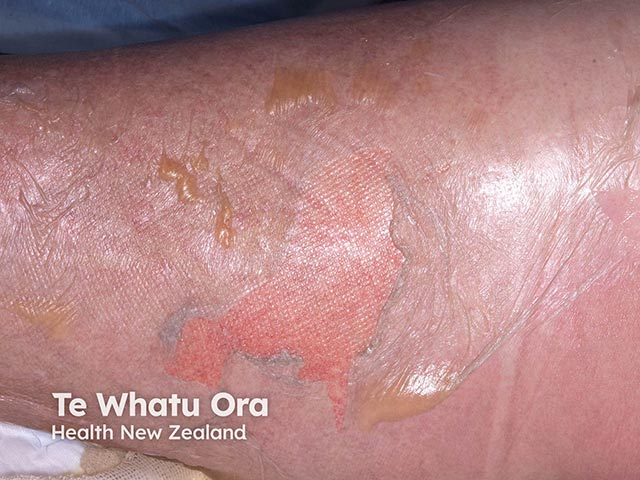
На этом кадре — начинающийся токсический эпидермальный некролиз: поверхностный слой эпидермиса отслаивается, обнажая влажную, красную, болезненную поверхность. Именно здесь суть субэпидермального разрушения без акантолиза — эпидермис уходит целым пластом, как обгоревшая кожа. Это принципиально иная картина, чем вскрывшийся пузырь при пузырчатке, где остаётся точечная эрозия.
Таким образом, уровень пузыря и патогенез — два независимых критерия, которые вместе определяют место любой нозологии в классификации. Внутриэпидермальный пузырь + аутоиммунный механизм = акантолитическая пузырчатка. Субэпидермальный + аутоиммунный = пемфигоид или дерматит Дюринга. Субэпидермальный + токсический = синдром Лайелла. Понять это различие — значит уже не путать эти болезни между собой.


Морфология пузыря: строение, механизмы формирования
Кожа отвечает на повреждение ограниченным набором реакций. Иммунный надзор здесь обеспечивают Т-лимфоциты: они составляют 90% всех лимфоцитов кожи и располагаются в эпидермисе и в верхних слоях дермы. Одна из самых наглядных — образование полости, заполненной жидкостью. Такая полость может быть маленькой и крупной, располагаться внутри эпидермиса или под ним, возникать из-за гибели клеток или из-за их расхождения. Прежде чем разбирать болезни, нужно понять, как устроена эта полость и какими путями она образуется.
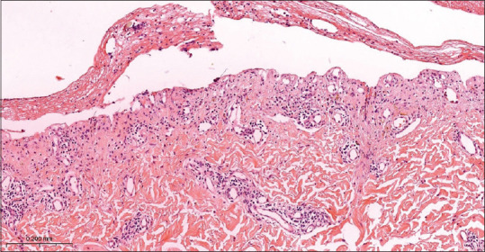
Два родственных элемента различают по размеру. Пузырёк (vesicula) — первичный полостной элемент диаметром до 0,5 см; он имеет дно, покрышку и полость, заполненную серозным или серозно-геморрагическим содержимым.[6, с. 21] Пузырь (bulla) отличается от пузырька лишь размером: диаметр пузырей составляет от 0,5 до 2 см и более.[6, с. 21] На практике граница между ними условна, и один элемент может переходить в другой — например, при буллёзном пемфигоиде заболевание начинается развитием напряжённых пузырей от нескольких миллиметров до 5–10 см в диаметре и более. Принципиально важны не размеры, а уровень расположения и механизм формирования: именно они определяют нозологию.
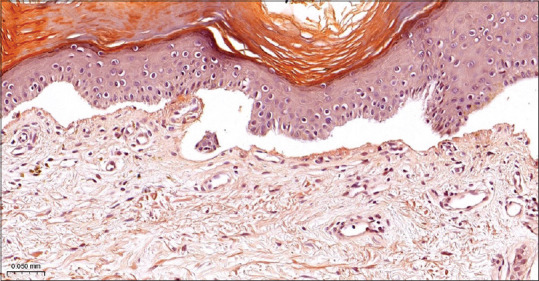
Полость пузыря может формироваться на трёх уровнях. Первый — внутри эпидермиса, второй — на границе эпидермиса и дермы, третий — субэпидермально, то есть ниже базального слоя. У каждого уровня — свой механизм, и знать их нужно вместе, потому что именно механизм отличает пузырчатку от пемфигоида, а пемфигоид — от герпеса.
Акантолиз: потеря контактов внутри эпидермиса
Акантолиз — процесс утраты связи между кератиноцитами шиповатого слоя вследствие повреждения их десмосомо-тонофиламентных контактов; он приводит к образованию внутриэпидермальных полостей — акантолитических пузырей.[6, с. 19] Десмосомы — это замки между соседними клетками; стоит им разрушиться, клетки расходятся и между ними накапливается межклеточная жидкость. При пузырчатке разрушение запускается аутоиммунной реакцией: антитела направлены против белков десмосом, иммунные комплексы оседают в межклеточных промежутках и буквально растворяют «склеивающее вещество».[6, с. 19] Кератиноциты, потерявшие связь, округляются и свободно плавают в содержимом пузыря — их называют акантолитическими клетками, или клетками Тцанка.[6, с. 19] Без механизма десмосомного соединения клетки эпидермиса не образовывали бы прочного монолита — пришлось бы рассчитывать только на простое механическое давление тканей друг на друга.
Посмотрите на гистологический препарат: на снимке ниже видна крупная полость внутри эпидермального пласта — интраэпидермальный пузырь с чётким дном и покрышкой из вышележащих слоёв.
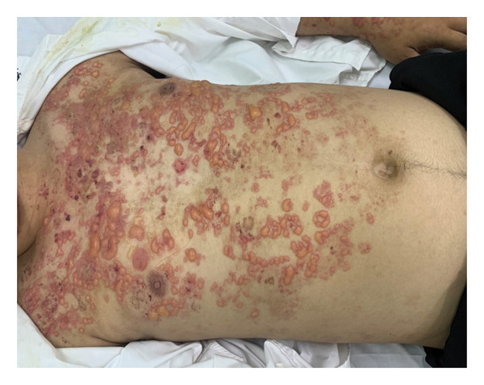
На этом клиническом снимке хорошо заметны напряжённые пузыри и буллы на эритематозной коже туловища — та самая картина, которую дают субэпидермальные механизмы формирования полости, о которых речь пойдёт ниже. Сравните форму элементов: напряжённая полусферическая покрышка указывает на субэпидермальное расположение, тогда как при акантолизе покрышка вялая и легко сдвигается.
Спонгиоз: межклеточный отёк
Спонгиоз — межклеточный отёк в результате проникновения серозного экссудата из расширенных сосудов сосочкового слоя в эпидермис.[6, с. 19] Жидкость раздвигает кератиноциты, их межклеточные связи сначала натягиваются, а потом рвутся — это вторичная потеря контактов, в отличие от первичной при акантолизе. На ограниченных участках часть клеток гибнет, и возникают микрополости — спонгиотические пузырьки; мелкие полости сливаются в более крупные, воспалительные клетки проникают в эпидермис и образуют спонгиотические пустулы.[6, с. 20] Спонгиоз характерен для экземы и аллергического дерматита, при которых образование везикул особенно часто.[6, с. 20] Механизм здесь гидравлический: давление жидкости разрушает то, что не смогло бы разрушить аутоантитело.
Баллонирующая дистрофия: внутриклеточный отёк при вирусных поражениях
При вирусных дерматозах — прежде всего при простом и опоясывающем герпесе — работает совсем другой механизм. Баллонирующая дистрофия характеризуется резко выраженным отёком эпидермиса, имеющим как межклеточный, так и внутриклеточный характер.[6, с. 20] Отёчные кератиноциты принимают форму крупных округлых «баллонов» и свободно плавают в полостях, заполненных серозно-фиброзным экссудатом.[6, с. 20] Клетки мальпигиева слоя шаровидно вздуваются вследствие некробиотических и дегенеративных изменений, теряют взаимную связь — разрушаются межклеточные мостики — и оказываются свободно взвешенными в содержимом пузырька.
Важно понимать разницу с акантолизом: там первична иммунная атака на десмосомы, здесь — прямое вирусное повреждение клетки изнутри. Именно поэтому пузырьки при герпесе многокамерные: каждая «камера» — это бывшая набухшая клетка или группа клеток. При вскрытии образуются мокнущие эрозии, эпителизирующиеся без стойких изменений кожи. Сгруппированные пузырьки на воспалённом основании — характерный признак герпетической инфекции и герпетиформного дерматита Дюринга.
Рядом с баллонирующей дистрофией нередко действует и вакуольная гидропическая дистрофия: внутриклеточный отёк кератиноцитов с образованием вакуолей, что ведёт к гибели клетки — она является одним из компонентов баллонирующей дистрофии при вирусных поражениях кожи типа герпеса.[6, с. 20]
Субэпидермальный пузырь: разрыв дермо-эпидермального соединения
Дермо-эпидермальное соединение — это зона базальной мембраны, которая механически удерживает эпидермис на дерме. Когда эта зона повреждается — воспалением, аутоантителами или механической травмой — эпидермис отслаивается от дермы целым пластом, и возникает субэпидермальный пузырь. Покрышка такого пузыря плотная и напряжённая, потому что она образована всем эпидермисом: базальный слой уходит на дно полости вместе с дермой. При буллёзном пемфигоиде в сыворотке крови и пузырной жидкости у 80% больных обнаруживаются антитела класса IgG к белку, входящему в состав базальной мембраны. Именно эти антитела и разрушают дермо-эпидермальное соединение. В мазках-отпечатках со дна свежей эрозии при этом заболевании обнаруживают большое количество эозинофилов — 20–30%, а акантолитические клетки отсутствуют.
Посмотрите на гистологический препарат субэпидермального пузыря: на снимке справа видна широкая щель на уровне базальной мембраны — эпидермис отслоен и приподнят, дно полости образовано дермой с воспалительным инфильтратом.
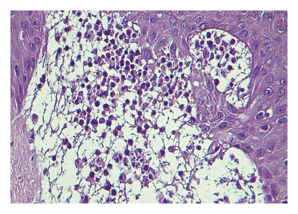
На этом препарате крупная субэпидермальная полость хорошо разграничена от дермы; в её просвете и в прилежащей дерме виден воспалительный инфильтрат с нейтрофилами — картина, типичная для герпетиформного дерматита Дюринга, при котором у 80% больных выявляют IgA-антитела к эндомизию. Обратите внимание: эпидермальный пласт над полостью сохранён, акантолитических клеток нет — именно это отличает субэпидермальный пузырь от акантолитического.
На месте любого вскрывшегося пузыря — независимо от уровня его расположения — образуется эрозивная поверхность, эпителизирующаяся без рубцов. Рубец не формируется потому, что дерма при этих процессах не разрушается: страдает только эпидермис или его соединение с подлежащей тканью.
Отдельного упоминания заслуживают вегетации — разрастание сосочкового слоя дермы с ворсинчатым видом, напоминающим цветную капусту или петушиные гребешки. Они возникают на дне эрозивно-язвенных дефектов при вегетирующей пузырчатке (влажные) и на поверхности папулёзных высыпаний при остроконечных кондиломах (сухие). Это уже не механизм образования пузыря, а исход — результат хронической пролиферации дермы на месте длительно существующего дефекта.
Итог раздела: уровень расположения пузыря и механизм его образования — два критерия, которые вместе указывают на нозологию. Акантолиз даёт вялый внутриэпидермальный пузырь с клетками Тцанка на дне; спонгиоз — мелкие везикулы при отёке межклеточных пространств; баллонирующая дистрофия — многокамерный пузырёк при вирусном поражении; разрыв дермо-эпидермального соединения — напряжённый субэпидермальный пузырь без акантолиза.
Вульгарная пузырчатка
Истинная, или акантолитическая, пузырчатка — аутоиммунное заболевание с образованием внутриэпидермальных пузырей, которое без лечения неизменно прогрессирует и заканчивается гибелью больного. Среди всех кожных болезней на её долю приходится до 1%, однако по тяжести течения она стоит особняком: неделями разрушает кожный барьер, выводит из строя терморегуляцию, белковый и водно-электролитный обмен и открывает путь для инфекции. Болеют преимущественно женщины 40–60 лет, хотя заболевание встречается в любом возрасте.
Вульгарная пузырчатка — наиболее частая форма среди четырёх разновидностей (вульгарная, вегетирующая, листовидная, эритематозная), и именно с неё начинается знакомство с группой. Деление на формы относительно: под действием кортикостероидной терапии одна форма может перейти в другую или сочетаться с ней.[6, с. 123]
Этиология
Причина заболевания до сих пор не установлена.[6, с. 123] В разное время её искали в нарушениях электролитного равновесия, интоксикациях, бактериальных и вирусных агентах, наследственной предрасположенности, эндокринных сдвигах и цитологических аномалиях кератиноцитов. Сегодня наиболее обоснованной считается аутоиммунная теория, а в качестве пускового агента при генетической предрасположенности рассматривается ретровирус.[6, с. 123]
Патогенез
В основе болезни лежит образование аутоантител класса IgG к цементирующей межклеточной субстанции и мембранам клеток шиповатого слоя — конкретно к белку десмоглеину, то есть попросту к «молекулярному клею», который удерживает соседние клетки кожи вместе.[6, с. 123] Комплекс антиген–антитело фиксируется в межклеточных мостиках — в зоне соединения десмосом и тонофиламентов — и разрушает эти связи.[6, с. 123] Разрушение межклеточных контактов называется акантолизом: клетки шиповатого слоя теряют сцепление, между ними накапливается межклеточная жидкость, и внутри эпидермиса формируется пузырь.[6, с. 19] Этот процесс ускоряется за счёт активации эстеразных протеолитических систем под действием иммунных комплексов, а также угнетения Т-клеточного иммунитета со снижением синтеза интерлейкина-2.[6, с. 123] В патогенезе участвует и нарушение солевого обмена: у больных резко снижается суточное выделение хлорида натрия с мочой.
Клиническая картина
Болезнь развивается в два этапа. Первая фаза — дебют со слизистой оболочки рта, нередко после перенесённого гриппа, ангины или удаления зуба. На видимо неизменённой слизистой появляются болезненные эрозии; рот открывается с трудом, еда причиняет боль, и именно в этот период больной чаще всего попадает сначала к стоматологу, а не к дерматологу. Этот период может длиться от нескольких дней до 3–6 месяцев и более.
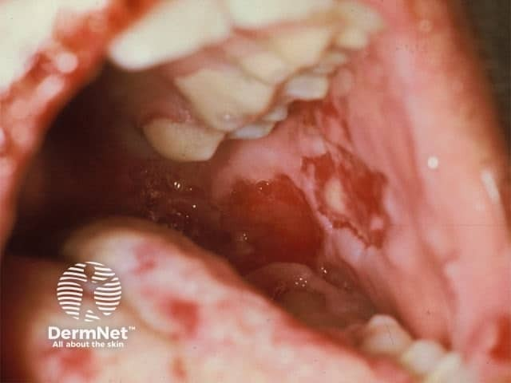
Посмотрите на снимок выше: на внутренней поверхности щеки видны обширные эрозии — ярко-красные, с неровными краями, без склонности к заживлению. Слизистая вокруг выглядит почти нетронутой. Именно так выглядит первая фаза вульгарной пузырчатки, и именно эта картина нередко ошибочно расценивается как афтозный стоматит или банальная травма.
Вторая фаза — вовлечение кожного покрова. На видимо неизменённой коже, без предшествующего воспаления, появляются вялые пузыри с тонкой, легко рвущейся покрышкой. При вскрытии остаются эрозии ярко-красного или синюшно-розового цвета с тенденцией к периферическому росту и почти без склонности к эпителизации. Крупные пузыри под действием собственного веса принимают грушевидную форму — так называемый «симптом груши». После медленного заживления эрозии оставляют пигментные пятна, но не рубцы.
На двух снимках выше — типичная картина кожной фазы. Обратите внимание: пузыри вялые, покрышка их словно обмякшая, а не напряжённая, как шарик. Рядом с целыми пузырями уже видны обширные эрозии с подрытыми краями — это результат периферического роста после вскрытия. Именно такая «вялость» пузыря отличает вульгарную пузырчатку от буллёзного пемфигоида, где покрышка тугая и упругая.
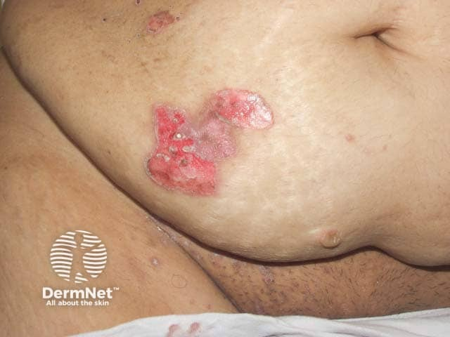
На снимке области живота и кожной складки хорошо видно, как эрозии занимают обширные площади, сливаясь между собой. Складки — излюбленное место: трение ускоряет разрыв пузырей. При генерализации присоединяются слабость, лихорадка до 38–39°С, диарея, отёки; нарастает потеря белка через мокнущие эрозии — плазморея, — и развивается кахексия. Без лечения летальный исход наступает в сроки от 6 месяцев до 1,5–2 лет.
Диагностика
Диагноз опирается на пять критериев.
Первый — клиническая картина: вялые пузыри на внешне неизменённой коже, длительно существующие эрозии без эпителизации.
Второй — симптом Никольского, то есть попросту механическая отслойка верхних слоёв эпидермиса при скользящем давлении пальцем на здоровую кожу вблизи или вдали от пузыря. Можно также потянуть обрывок покрышки вскрывшегося пузыря — эпидермис отслоится полоской. Этот феномен отражает то, что акантолиз уже идёт во всём эпидермисе, а не только в зоне видимого пузыря.
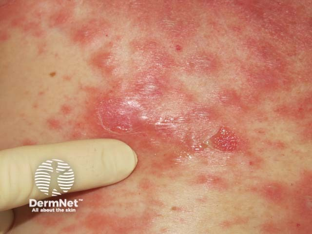
На снимке с выраженной диффузной эритемой хорошо показана зона, где проверяется симптом Никольского: даже при лёгком скользящем давлении на такой коже верхний слой эпидермиса смещается, обнажая влажную поверхность. Модификация этого теста — феномен Асбо-Хансена: если надавить пальцем на покрышку невскрывшегося пузыря, он расширяется в стороны, потому что жидкость под давлением дополнительно расслаивает уже повреждённый акантолизом эпидермис.
Третий критерий — цитологическое исследование по Тцанку. Кусочком стерилизованной резинки материал со дна свежей эрозии переносят на предметное стекло, высушивают, фиксируют и окрашивают по Гимза-Романовскому.[6, с. 123] В препарате ищут акантолитические клетки, или клетки Тцанка — кератиноциты, утратившие связь с соседями в результате акантолиза.[6, с. 19] Они имеют округлую форму, непропорционально крупное ядро интенсивно-фиолетового цвета, занимающее почти всю клетку, узкий ободок резко базофильной цитоплазмы; в ядре видны два и более светлых ядрышка. Обнаружение таких клеток в мазке-отпечатке — быстрый и доступный признак акантолитической пузырчатки.
Четвёртый критерий — гистологическое исследование свежего пузыря: видны внутриэпидермальные щели и пузыри с акантолитическими клетками.
Пятый критерий — иммунофлюоресценция. Прямая иммунофлюоресценция (ПИФ) выполняется на срезе клинически непоражённой кожи больного, обработанном 40% водно-спиртовой смесью в течение двух минут, с мечеными флюорохромом антителами класса IgG. В межклеточной склеивающей субстанции шиповатого слоя эпидермиса обнаруживаются фиксированные комплексы антиген–антитело — картина, патогномоничная для пузырчатки.[6, с. 123] При непрямой иммунофлюоресценции в сыворотке крови и пузырной жидкости выявляются циркулирующие «пемфигусоподобные» аутоантитела.
Осложнения и прогноз
Генерализованный процесс означает недостаточность кожи — утрату контроля над терморегуляцией, механическим, химическим и микробным барьером, нарушение белкового и водно-электролитного баланса. Вторичные инфекции, сепсис, кахексия — закономерный финал нелеченой болезни. Именно поэтому вульгарная пузырчатка требует лечения как неотложное состояние, а доза преднизолона при назначении составляет 1 мг/кг в сутки.
Дифференциальный диагноз проводят с буллёзным пемфигоидом Левера, герпетиформным дерматитом Дюринга, себорейной экземой и хронической язвенно-вегетирующей пиодермией. Главное отличие вульгарной пузырчатки от каждого из них — положительный симптом Никольского и обнаружение клеток Тцанка в мазке-отпечатке.
Другие формы пузырчатки: вегетирующая, листовидная, эритематозная
Пузырчатка поражает преимущественно лиц 40–60 лет, чаще женщин, и встречается в виде нескольких форм: вульгарной, вегетирующей, листовидной и эритематозной (себорейной).[6, с. 123] Деление это условное — одна форма может переходить в другую, особенно на фоне кортикостероидной терапии.[6, с. 123] Прежде чем разбирать каждую, стоит зафиксировать одно различие, которое объясняет многое в клинике: при вульгарной и вегетирующей пузырчатке полости располагаются супрабазально, при листовидной и эритематозной — в зоне зернистого слоя, нередко под роговым.[6, с. 124] Глубина раскола определяет, насколько прочна покрышка пузыря и насколько обширны будут эрозии.
Взгляните на Таблицу 1 — она сводит четыре формы по трём ключевым осям: уровню акантолиза, мишени аутоантител и поражению слизистых. Ниже каждая строка разобрана словами, так что пропустить таблицу можно без потери.
| Форма | Уровень акантолиза | Антиген-мишень | Слизистые | Течение |
|---|---|---|---|---|
| Вульгарная | Супрабазальный | Десмоглеин-3 (±десмоглеин-1) | Поражаются (часто первыми) | Тяжёлое, прогрессирующее |
| Вегетирующая | Супрабазальный | Десмоглеин-3 | Поражаются (граница кожи/слизистой) | Более длительное, возможны ремиссии |
| Листовидная | Зернистый слой / под роговым | Десмоглеин-1 | Как правило, не поражаются | Длительное, до 2–5 лет и более, летальный исход |
| Эритематозная (себорейная) | Зернистый слой / под роговым | Десмоглеин-1 | Редко | Хроническое, относительно доброкачественное |
Как видите в таблице, вульгарная и вегетирующая формы атакуют десмоглеин-3 и разрывают эпидермис глубоко, у самого основания — отсюда крупные, долго незаживающие эрозии и обязательное вовлечение слизистых. Листовидная и эритематозная метят в десмоглеин-1, раскол идёт высоко, покрышка тонкая и ненадёжная, а слизистые страдают редко или не страдают вовсе.
Вегетирующая пузырчатка
Большинство авторов считают вегетирующую пузырчатку разновидностью вульгарной: начало заболевания практически неотличимо. Пузыри возникают на видимо неизменённой коже и слизистых, одновременно или чуть позже появляются высыпания вокруг естественных отверстий и в складках — подмышечных, паховых, под молочными железами, в межпальцевых промежутках, в области пупка.
Принципиальное отличие выявляется тогда, когда на поверхности сливающихся эрозий начинают расти вегетации — сочные разрастания розово-красного цвета высотой от 0,2 до 1 см и более. Морфологическая основа этих разрастаний — папилломатоз: удлинение и разветвление сосочков дермы. Поверхность вегетаций покрыта сероватым налётом, серозным или гнойным отделяемым, издаёт зловонный запах. На границе слизистых с кожей — у губ, носа, половых органов, заднего прохода — вегетации особенно часты.[6, с. 125]
Симптом Никольского при этой форме положителен лишь вблизи очагов; на внешне здоровой коже он появляется, как правило, только в терминальной стадии.[6, с. 125] Течение более длительное, чем при вульгарной пузырчатке, возможны полные и продолжительные — на несколько месяцев и даже лет — ремиссии.[6, с. 125]
Исторически выделяют два варианта: вариант Нейманна (открыт в 1886 году) с выраженными вегетациями и периодическими обострениями и более доброкачественный вариант Аллопо, при котором первичным элементом служат не пузыри, а пустулы, а вегетации формируются медленнее.
Листовидная пузырчатка
Это тяжёлое злокачественно протекающее заболевание. Пузыри при нём плоские, с тонкой дряблой покрышкой, возникают на эритематозном фоне и разрываются даже при незначительном прикосновении.[6, с. 125] Образовавшиеся эрозии поверхностные, с обильным серозным отделяемым, подсыхающим в пластинчатые корки, напоминающие листы бумаги — отсюда и название. Корки не отторгаются, поскольку под ними продолжает отделяться экссудат; это приводит к образованию нового пузыря прямо под старой коркой, а затем ещё одного — так нарастают массивные слоистые наслоения желтовато-коричневатых чешуйко-корок.
Сравните эти наслоения с листами отсыревшей бумаги, слипшимися в стопку: каждый лист — отдельный цикл «пузырь → эрозия → корка», и стопка продолжает расти снизу вверх, пока болезнь активна. Именно это постоянное возобновление отличает листовидную форму от простого нагноения.
Слизистые оболочки при листовидной пузырчатке, за редким исключением, не поражаются. Заболевание часто начинается с лица, волосистой части головы, груди и верхней половины спины.[6, с. 126] Симптом Никольского выражен резко, включая внешне здоровую кожу.[6, с. 126] Течение длительное — до 2–5 лет и более, с постепенным нарастанием слабости и летальным исходом.[6, с. 126]
Диагностика строится на трёх методах. В мазках-отпечатках со дна свежей эрозии находят акантолитические клетки. Гистологически видны внутриэпидермальные щели и поверхностные пузыри, расположенные под зернистым или роговым слоем. Важная оговорка: ни прямая, ни непрямая иммунофлюоресценция не позволяют отличить листовидную пузырчатку от вульгарной — картина одинакова. Аутоантитела направлены против десмоглеина-1 — именно этот антиген экспрессируется преимущественно в верхних слоях эпидермиса, что и объясняет высокий уровень акантолиза.
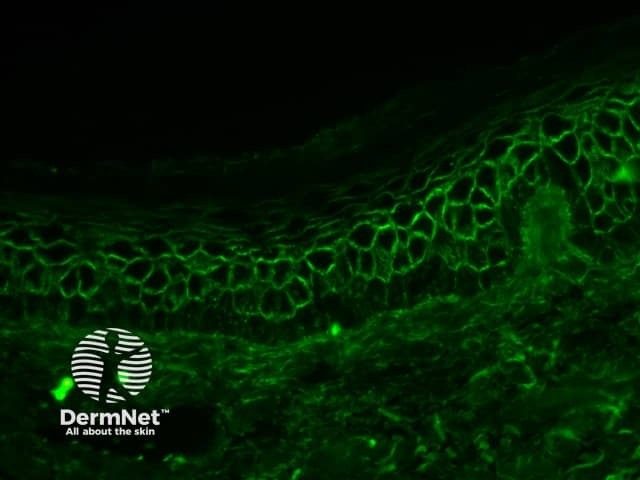
На снимке флуоресцентной микроскопии выше — срез эпителиальной ткани при листовидной пузырчатке, окрашенный методом прямой иммунофлюоресценции. Свечение расположено в межклеточных пространствах эпидермиса: именно там зафиксированы комплексы аутоантител с десмоглеином. Обратите внимание, что сигнал концентрируется в верхних рядах шиповатого слоя — это и есть визуальное подтверждение поверхностного уровня акантолиза, характерного для листовидной формы.
Отдельного упоминания заслуживают эндемические формы листовидной пузырчатки — прежде всего fogo selvagem («дикий огонь»), распространённая в Бразилии и некоторых районах Южной Америки. Механизм аутоиммунный, антиген тот же — десмоглеин-1, однако в очагах эндемии заболевание встречается у молодых людей и даже детей, что связывают с воздействием внешнего триггера, предположительно переносимого насекомыми.
Посмотрите на два клинических снимка выше — это листовидная пузырчатка с картиной, напоминающей erythema gyratum repens: на туловище и спине видны обширные, местами сливающиеся эритематозные высыпания с концентрическими и завихряющимися краями. Такой рисунок возникает из-за того, что новые пузыри раз за разом образуются под старыми корками, постепенно расползаясь по всему кожному покрову. Именно эта картина — диффузное поражение без чётких границ, без интактных «островков» — подсказывает, что процесс вышел за рамки одного участка и захватил большую площадь.
Эритематозная пузырчатка (синдром Сенира–Ашера)
Эритематозная пузырчатка, она же себорейная, описана Сениром и Ашером и клинически сочетает признаки трёх болезней сразу: себорейного дерматита, красной волчанки и собственно пузырчатки. Начинается, как правило, с лица или волосистой части головы.[6, с. 126] На коже лица высыпания располагаются симметрично — на щеках и спинке носа, образуя картину, похожую на «бабочку» при красной волчанке.[6, с. 126] Первичные элементы — розово-красные бляшки диаметром от 2 до 5 см, покрытые сухими плотно сидящими чешуйками или жирными желтовато-коричневыми корками.[6, с. 126]
Симптом Никольского положителен или слабоположителен, краевой. Клетки Тцанка обнаруживают не всегда. Гистологически — щели и плоские пузыри под роговым или зернистым слоем, как при листовидной форме. Иммунологически картина неожиданная: при прямой иммунофлюоресценции выявляется не только межклеточное свечение, характерное для пузырчатки, но и «полосовидный тест» в зоне базальной мембраны — точно как при дискоидной волчанке. Именно это сочетание двух паттернов свечения и объясняет клиническое сходство с волчанкой.
Слизистые оболочки вовлекаются редко.[6, с. 126] Течение хроническое, относительно доброкачественное, однако со временем заболевание может трансформироваться в вульгарную или листовидную пузырчатку.
Паранеопластическая пузырчатка
Паранеопластическая пузырчатка — особая форма, при которой аутоиммунный пузырный дерматоз развивается как реакция на злокачественное новообразование внутренних органов. Чаще всего это лимфомы, тимома, хронический лимфолейкоз, саркома Кастлемана. Аутоантитела образуются против нескольких антигенов десмосомного комплекса одновременно, поэтому клиническая картина полиморфна: у одного больного можно видеть и типичные акантолитические пузыри, и мишеневидные элементы, как при многоформной эритеме, и эрозии слизистых оболочек, особенно упорно не заживающие.
Принципиально важно, что при паранеопластическом процессе лечение злокачественного новообразования является основным: без воздействия на опухоль иммуносупрессивная терапия малоэффективна. Диагноз следует иметь в виду всякий раз, когда пузырный дерматоз плохо отвечает на глюкокортикоиды и сопровождается симптомами, нетипичными для классической пузырчатки.
Итог раздела: форма пузырчатки определяется уровнем акантолиза и мишенью аутоантител. Вегетирующая и вульгарная — глубокий, супрабазальный раскол с поражением слизистых; листовидная и эритематозная — поверхностный, под роговым слоем, слизистые интактны. Трансформация одной формы в другую возможна, и при лечении кортикостероидами её нужно ожидать.
Лечение пузырчатки
Лечение истинной пузырчатки строится поэтапно, требует стационарного начала и пожизненного диспансерного наблюдения. Это не просто формальное требование: без контроля за дозами и состоянием пациента оба главных инструмента терапии — глюкокортикостероиды и цитостатики — способны нанести вред, сопоставимый с самой болезнью.
Основа лечения — глюкокортикостероиды (ГКС). Лечение патогенетическое: оно направлено на подавление синтеза аутоантител к белкам десмосом шиповатых клеток эпидермиса. Начальная доза преднизолона составляет 1 мг/кг в сутки; при особо тяжёлых формах некоторые источники указывают на необходимость 80–100 мг/сут и выше. В лечении выделяют три этапа. Первый — назначение ударных доз ГКС, которыми достигают оптимального результата обычно в течение 3–6 недель. Второй — постепенное медленное снижение суточной дозы до поддерживающей, на это уходит около 6 месяцев. Третий — длительное, пожизненное амбулаторное лечение поддерживающими дозами при тщательном диспансерном наблюдении; именно он самый продолжительный.
Когда доза ГКС уже велика, а эффект недостаточен или побочные эффекты нарастают, прибегают к стероидсберегающей терапии — сочетанию ГКС с цитостатиками, позволяющему снизить суточную дозу гормонов без потери контроля над болезнью. Цитостатики не могут полностью заменить ГКС, но при резистентных и тяжёлых формах пузырчатки они становятся необходимым дополнением. Применяют метотрексат — внутримышечно по 25 мг с интервалами в 1 неделю, курс 6–8 инъекций; азатиоприн — внутрь по 50–250 мг (из расчёта 2,5 мг на 1 кг массы тела) в сутки; циклофосфамид — по 100–200 мг в сутки.[6, с. 127] Число курсов и промежутки между ними определяются тяжестью заболевания и переносимостью препаратов.
Осложнения цитостатической терапии серьёзны, и студенту важно держать их перед глазами. К наиболее значимым относятся: изъязвление слизистой оболочки пищеварительного тракта, нарушение функций печени, почек и поджелудочной железы, угнетение кроветворения, осложнения микробными, микотическими и вирусными инфекциями, нарушения сперматогенеза и овогенеза, алопеция.[6, с. 127] Длительность применения цитостатиков определяется терапевтическим эффектом и их переносимостью.
Осложнения длительной кортикостероидной терапии составляют отдельный, не менее внушительный список. Сравните два перечня — и станет ясно, почему лечение пузырчатки требует постоянного врачебного контроля, а не просто выписанного рецепта. При системном применении ГКС развиваются: синдром Иценко–Кушинга, гипокалиемия, задержка натрия, стимуляция инфекций, нарушение белкового обмена, диабетогенный эффект, ульцерогенный эффект, повышенная свёртываемость крови, заболевания ЦНС, гипокальциемия, гипостатическая пневмония, атрофия коры надпочечников. В ситуации, когда стандартный режим не позволяет быстро остановить прогрессирование, применяют пульс-терапию ГКС — введение сверхвысоких доз препарата коротким курсом (как правило, внутривенно, в течение 3 дней), после чего переходят на обычный пероральный приём. Такой режим позволяет быстро подавить аутоиммунную агрессию, минимизируя суммарную дозу гормона.
Для профилактики осложнений ГКС-терапии рекомендуются: диета, богатая белками и витаминами, с резким ограничением углеводов, жиров и поваренной соли; приём хлорида калия до 3 г в день; протекторы слизистой оболочки желудка; анаболические гормоны; витамины группы В.[6, с. 127] При присоединении вторичной инфекции назначают антибиотики и противокандидозные средства.[6, с. 127]
Среди витаминов группы В особое место занимает пантотеновая кислота (витамин В5): при истинной пузырчатке её дефицит усугубляет нарушение трофики эпителия, и коррекция этого дефицита входит в схему вспомогательной терапии. При эпидемической пузырчатке новорождённых — стафилококковом пемфигоиде, вызванном эксфолиатином и протекающем на фоне незрелого иммунного ответа, — дополнительно применяют биотин (витамин В7), необходимый для нормального развития кожного барьера у ребёнка.
С целью удаления циркулирующих аутоантител из организма и повышения чувствительности к кортикостероидным гормонам используют экстракорпоральные методы — плазмаферез, гемосорбцию, гемодиализ, особенно на начальных этапах заболевания.[6, с. 127] При выраженном подавлении Т-клеточного звена иммунитета могут быть назначены иммунотропные препараты — тактивин и другие тимические факторы.
Теперь посмотрите на всю схему целиком — по шагам, без рисунка, но последовательно. Первый шаг: госпитализация, ударная доза преднизолона 1 мг/кг/сут, при необходимости — пульс-терапия ГКС; параллельно — плазмаферез для снижения уровня аутоантител. Второй шаг: при недостаточном ответе или нарастании побочных эффектов — добавление цитостатика (стероидсберегающая терапия), коррекция электролитов, протекция желудка, анаболические гормоны, витамины группы В. Третий шаг: постепенное снижение дозы ГКС на протяжении 6 месяцев до поддерживающей, перевод на амбулаторный режим, пожизненное диспансерное наблюдение. На каждом этапе — контроль анализов крови, функции печени и почек, артериального давления, уровня глюкозы.
Разбор клинической ситуации поможет связать эти шаги воедино. Что видит врач: пациент с обширными эрозиями на слизистых и коже, положительным симптомом Никольского, подтверждённым акантолизом — свежие высыпания продолжают появляться несмотря на начатую неделю назад терапию. Что он из этого выводит: доза ГКС недостаточна либо заболевание резистентно к монотерапии; эрозии инфицированы — видны мутное отделяемое и перифокальная гиперемия. Что делает дальше: увеличивает дозу преднизолона, добавляет азатиоприн как стероидсберегающий агент, назначает антибиотик с учётом чувствительности флоры, начинает местную обработку эрозий.
Местная терапия при пузырчатке — не второстепенная мера. Эрозии обрабатывают анилиновыми красителями (раствором бриллиантового зелёного, метиленового синего), накладывают антисептические повязки. Цель — предотвратить вторичное инфицирование открытых поверхностей, которые при пузырчатке могут занимать значительную площадь кожи и слизистых. На очаги допустимо нанесение кортикостероидных мазей.
Прогноз при пузырчатке всегда серьёзен. Профилактика рецидивов включает щадящий режим, исключение простудных ситуаций и интенсивной инсоляции. Самовольная отмена поддерживающей дозы ГКС — наиболее частая причина обострения у амбулаторных пациентов, и эту опасность необходимо разъяснять каждому больному при выписке.
Буллёзный пемфигоид
Среди пузырных дерматозов есть важное разграничение, которое определяет всё — и механизм образования пузыря, и его внешний вид, и результаты лабораторных тестов. Пемфигоиды — это группа заболеваний, при которых пузырь образуется не внутри эпидермиса, а под ним: эпидермис отслаивается от дермы целиком, как снятая перчатка. Причина — аутоантитела к белкам базальной мембраны, той тонкой пластинке, которая соединяет эпидермис с подлежащей дермой. Никакого разрушения связей между клетками эпидермиса — акантолиза — при этом не происходит.
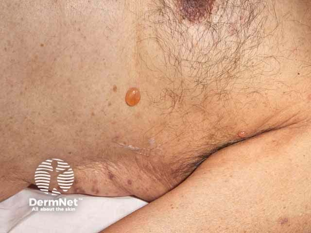
Буллёзный пемфигоид (синонимы: пузырчатка неакантолитическая, пемфигоид Левера) — редкий хронически протекающий относительно доброкачественный буллёзный дерматоз, который поражает прежде всего пожилых людей. Его аутоиммунная природа установлена достаточно точно: в крови и в коже больных обнаруживают аутоантитела к двум белкам базальной мембраны зоны (БМЗ) — того слоя между эпидермисом и дермой, который служит опорой и фильтром одновременно.
Оба антигена-мишени синтезируются кератиноцитами базального слоя. Первый — BP180 (bullous pemphigoid antigen 180), трансмембранный коллаген XVII типа с молекулярной массой 180 кДа; он проходит сквозь мембрану базального кератиноцита и заякоривает клетку в прозрачной пластинке БМЗ. Второй — BP230 (bullous pemphigoid antigen 230), внутриклеточный белок, связывающий тонофиламенты с полудесмосомами. Аутоантитела к этим антигенам, оседая на БМЗ, активируют комплемент; его компоненты привлекают к месту реакции нейтрофилы и эозинофилы. Лизосомные ферменты этих клеток разрушают базальную мембрану, и под эпидермисом формируется полость — субэпидермальный пузырь.[6, с. 127]
Кто болеет и почему это важно помнить
Буллёзный пемфигоид поражает обычно людей преклонного возраста — 60–70 лет, хотя изредка возникает и у детей: такой вариант называют ювенильным пемфигоидом. Возраст дебюта имеет практическое значение по одной причине: дерматоз в ряде случаев носит паранеопластический характер, поэтому всем больным пожилого возраста показано онкологическое обследование для исключения рака внутренних органов.[6, с. 127]
Клиническая картина
Болезнь редко начинается сразу с крупных булл. Первые недели или месяцы на коже могут появляться уртикароподобные элементы, папулы, мелкие везикулы — картина, которую легко принять за другое заболевание. Затем формируются типичные высыпания: напряжённые пузыри размером от нескольких миллиметров до 5–10 см в диаметре и более. Размах велик — посмотрите, как это выглядит на снимках ниже.
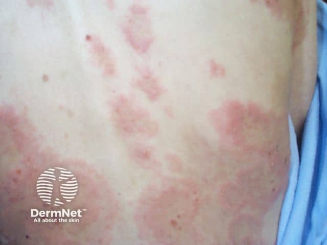
На этой фотографии хорошо видно начало болезни: кожа туловища покрыта множественными розовато-красными пятнами и уплощёнными элементами на воспалённом основании — это та самая предбуллёзная фаза, когда типичных пузырей ещё нет, а диагноз уже надо заподозрить. Обратите внимание: фон отёчный, эритематозный, но покрышки ещё не сформировались.
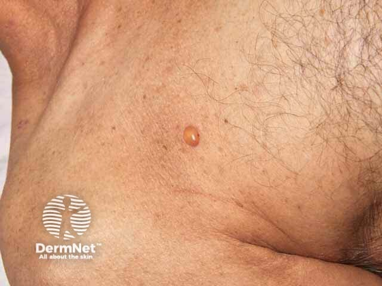
А вот уже сформировавшийся пузырь — куполообразный, с плотной напряжённой покрышкой и прозрачным содержимым. Именно напряжённость покрышки — ключевой клинический признак, отличающий буллёзный пемфигоид от вульгарной пузырчатки: там пузырь вялый, ненапряжённый, лопается при малейшем касании.
Пузыри возникают на внешне неизменённой коже или на фоне отёчной эритемы, сопровождаются выраженным зудом, жжением и болезненностью различной интенсивности. Содержимое — серозное или серозно-кровянистое. При группировке пузыри образуют очаги причудливых очертаний на фоне эритемы. Излюбленная локализация — нижняя половина живота, паховые складки, подмышечные ямки, сгибательные поверхности рук и ног.
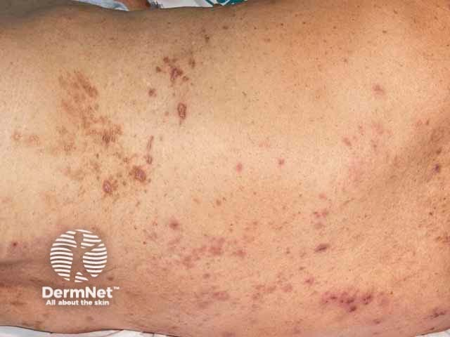
На снимке кожи спины — множественные напряжённые пузыри на эритематозно-отёчном фоне: одни целые, куполообразные, другие уже подсыхают. Видно, что эрозии после вскрытия не расползаются по периферии и быстро эпителизируются, оставляя пигментацию — это принципиальное отличие от истинной пузырчатки, где эрозии растут и долго не заживают.
Симптом Никольского слабоположителен или отрицателен. Поражение слизистых оболочек наблюдается у 20–40% больных, возникает вторично, ограничивается полостью рта и протекает без сильных болей и обильного слюнотечения — в отличие от вульгарной пузырчатки, где слизистые поражаются первыми и страдают значительно. Течение хроническое, иногда многолетнее; рецидивы нередко провоцируются УФ-лучами.
Ювенильный вариант выглядит схоже: напряжённые пузыри с серозным содержимым, выраженный зуд. Для него характерна та же субэпидермальная природа, что и у взрослого пемфигоида.
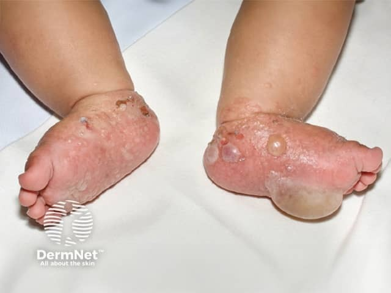
На снимке стоп и нижних отделов голеней младенца — крупные напряжённые пузыри и эрозии на их месте. Это и есть ювенильный пемфигоид: редкий, но реально существующий вариант, при котором морфология высыпаний полностью соответствует взрослой форме болезни.
Диагностика: порядок величин имеет значение
Диагностика буллёзного пемфигоида строится на четырёх методах, и их информативность различается на порядок.
Цитодиагностика. В мазках-отпечатках со дна свежей эрозии обнаруживают большое количество эозинофилов — 20–30%, — а акантолитические клетки отсутствуют. Последнее принципиально: при истинной пузырчатке клетки Тцанка есть всегда.
Гистология. В биоптате пузыря видна субэпидермальная полость с многочисленными эозинофилами; в дерме — инфильтрат из нейтрофилов, эозинофилов и гистиоцитов. Пузырь находится под эпидермисом, а не внутри него — это и есть тот гистологический признак, который решает дифференциальный диагноз с вульгарной пузырчаткой.
Прямая иммунофлюоресценция (ПИФ). В биоптате пораженной кожи обнаруживают гомогенное полосовидное отложение IgG и С3-компонента комплемента в зоне базальной мембраны. Посмотрите на микрофотографии ниже: именно эта картина — линейная полоса свечения вдоль БМЗ — отличает пемфигоид от герпетиформного дерматита Дюринга, где IgA откладываются гранулами на верхушках сосочков дермы.
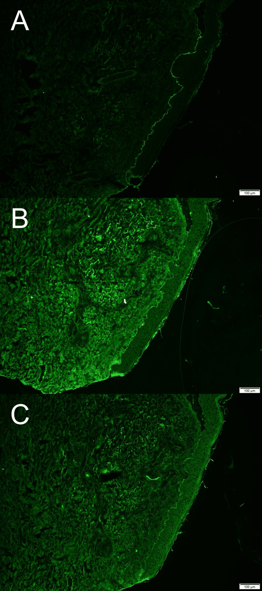
На трёх панелях флуоресцентной микроскопии виден зелёный сигнал иммунного мечения вдоль дермо-эпидермальной границы — это и есть то самое полосовидное отложение иммуноглобулинов, характерное для буллёзного пемфигоида. Линия непрерывная и чёткая; именно её расположение — в зоне базальной мембраны, а не в межклеточных пространствах шиповатого слоя — указывает на пемфигоид, а не на пузырчатку.
Непрямая иммунофлюоресценция. В сыворотке крови и пузырной жидкости у 80% больных буллёзным пемфигоидом обнаруживаются антитела класса IgG к белку, входящему в состав базальной мембраны. Здесь важен один практический вывод: титры этих антител не коррелируют с тяжестью течения заболевания. Это значит, что ориентироваться на уровень антител при выборе дозы лечения нельзя — клиническая картина важнее серологии.
Теперь — порядок величин, о котором стоит помнить. ПИФ выявляет изменения у практически всех больных с активным заболеванием, тогда как непрямая ИФ — лишь у 80%. Разрыв не огромный, но именно поэтому при отрицательной непрямой ИФ диагноз не снимается: нужна ПИФ биоптата. С другой стороны, 80% — это восемь из десяти пациентов, и сыворотка для непрямой ИФ доступна без биопсии, поэтому логика обследования такова: сначала серология, при сомнении — ПИФ кожи.
Дифференциальный диагноз проводят прежде всего с вульгарной пузырчаткой и герпетиформным дерматитом Дюринга. От пузырчатки пемфигоид отличают субэпидермальное (а не интраэпидермальное) расположение пузыря, отрицательный симптом Никольского, отсутствие акантолитических клеток и свечение вдоль базальной мембраны (а не в шиповатом слое). От дерматита Дюринга — тип иммуноглобулина (IgG при пемфигоиде, IgA при Дюринге) и характер отложений (линейный при пемфигоиде, гранулярный при Дюринге).
Лечение
Основа лечения — иммунодепрессанты. Преднизолон или другой глюкокортикоид в эквивалентной дозе назначают по 40–60 мг/сут до получения выраженного клинического эффекта, затем дозу постепенно снижают до поддерживающей — 10–15 мг/сут. Глюкокортикоиды применяют самостоятельно или в сочетании с азатиоприном или диаминодифенилсульфоном (ДДС). При выявлении антител IgA в базальной мембране или преимущественно нейтрофильного инфильтрата добавляют сульфоновые препараты — диаминодифенилсульфон по 50 мг два раза в день. Цитостатики (азатиоприн, циклофосфамид, метотрексат) позволяют снизить дозу стероидов при резистентных случаях.
Прогноз при буллёзном пемфигоиде благоприятнее, чем при истинной пузырчатке: возможно полное выздоровление, хотя хроническое рецидивирующее течение — частый исход, а у ослабленных пожилых пациентов болезнь может завершиться летально.
Герпетиформный дерматит Дюринга
Кажется, что болезнь с таким названием — какой-то вариант герпеса. На деле герпетиформный дерматит Дюринга — аутоиммунное заболевание, не имеющее никакого отношения к вирусу герпеса: слово «герпетиформный» описывает лишь внешнюю схожесть сыпи — сгруппированные пузырьки, — но механизм, причина и лечение у неё принципиально иные.
По сути это редкий доброкачественный хронически рецидивирующий полиморфный дерматоз, связанный с глютеновой энтеропатией — повреждением слизистой тонкой кишки белком злаков, глютеном. Встречается редко, чаще у мужчин, нередко дебютирует в 30–40 лет. Болезнь названа в честь американского дерматолога Луиса Дюринга, описавшего её в 1884 году.
Патогенез
Этиология формально считается неизвестной, однако механизм достаточно хорошо расшифрован.[6, с. 129] У абсолютного большинства больных есть глютенчувствительная энтеропатия: ворсинки тонкой кишки атрофируются, развивается идиопатическая стеаторея — целиакия. Когда глютен всасывается сквозь повреждённую стенку кишки, в крови накапливаются циркулирующие иммунные комплексы «глютен–антитела» класса IgA.[6, с. 129] Эти комплексы оседают в коже: при прямой иммунофлюоресценции обнаруживают отложения IgA и фракции комплемента C3 в виде гранул на верхушках сосочков дермы и внутри них — именно там, где потом и формируются пузыри. Косвенно подтверждает аутоиммунную природу и непрямая иммунофлюоресценция: у 80% больных в сыворотке крови выявляют IgA-антитела к эндомизию — структурному белку мышечной оболочки кишечника.
Помимо глютена, определённую роль в патогенезе играют повышенная чувствительность к йоду и генетическая предрасположенность. Провоцирующими факторами служат приём большого количества крахмала и йода, чрезмерная инсоляция и вирусные заболевания. Наконец, у пожилых пациентов с атипичным течением болезнь может оказаться параонкологическим дерматозом — кожным проявлением скрытой опухоли.
Клиническая картина
Начало обычно постепенное — недели и месяцы. Болезнь приобретает хроническое течение, прерывается ремиссиями продолжительностью от 3 месяцев до 1 года и более.[6, с. 129] Перед появлением сыпи пациент нередко отмечает недомогание, небольшую лихорадку, покалывание и — особенно часто — нарастающий зуд.
Главная черта заболевания — истинный полиморфизм сыпи: на коже одновременно существуют эритематозные пятна, уртикароподобные элементы, папулы, везикулы и пузыри, к которым добавляется ложный полиморфизм в виде эрозий, экскориаций и корочек. Высыпания группируются и располагаются симметрично — на разгибательных поверхностях рук и ног, локтях, коленях, плечах, а также на крестце, ягодицах, пояснице, задней поверхности шеи, волосистой части головы и лице.[6, с. 130] Слизистые оболочки поражаются редко. После регресса элементов на их месте закономерно остаётся стойкая пигментация.
Зуд при дерматите Дюринга — мучительный, порой с жжением, нарушает сон во время рецидивов.[6, с. 130] Симптом Никольского отрицателен — в отличие от пузырчатки.
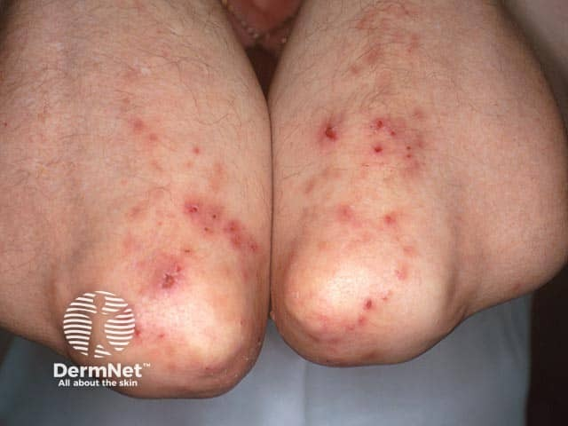
Посмотрите на снимок выше: на обеих разгибательных поверхностях локтей — в их типичной локализации — видны сгруппированные элементы, расчёсанные до эрозий. Корочки на месте вскрывшихся везикул — следствие того самого мучительного зуда, который пациент не может удержать. Эта картина типична для рецидива: группировка и симметрия при первом взгляде сразу наводят на диагноз.
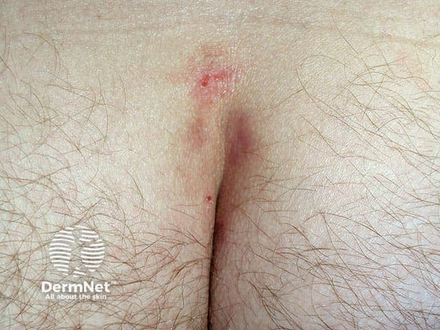
Крестцово-ягодичная область — ещё один типичный адрес болезни. На снимке в зоне межъягодичной складки хорошо видны эритематозные очаги: именно здесь, наряду с локтями и коленями, дерматит Дюринга оставляет характерный след. Запомните эту пару локализаций — разгибатели плюс крестец — как опорный клинический признак.
Гистология
Под микроскопом картина достаточно специфична. Пузыри располагаются субэпидермально — между эпидермисом и дермой; их серозное содержимое богато эозинофилами. По краям пузырей, на верхушках дермальных сосочков, находятся папиллярные микроабсцессы — скопления нейтрофильных и эозинофильных гранулоцитов. Среди воспалительного инфильтрата встречается «ядерная пыль» — фрагменты разрушенных ядер. Именно субэпидермальное расположение пузыря отличает дерматит Дюринга от пузырчатки, при которой пузырь внутриэпидермальный.
Диагностика
Диагностика строится на нескольких опорах. Первая — эозинофилия: повышенный уровень эозинофилов в крови и пузырной жидкости свидетельствует в пользу диагноза, хотя их отсутствие его не исключает. В мазках-отпечатках со дна свежей эрозии акантолитических клеток нет, зато много эозинофилов — и это уже позволяет отличить болезнь от пузырчатки.
Вторая опора — проба Ядассона, специфический провокационный тест с йодом. Проводится в двух вариантах. Накожно: на 1 кв. см здоровой кожи предплечья под компресс на 24 часа накладывают мазь с 50% йодидом калия; проба положительна, если на этом месте появляются эритема, везикулы или папулы.[6, с. 130] Если накожная проба отрицательна, дают внутрь 2–3 столовые ложки 3–5% раствора калия йодида; положительным результатом считается обострение заболевания.[6, с. 130] При тяжёлом течении внутренняя проба может вызвать резкое обострение — в таких случаях от неё следует отказаться.[6, с. 130]
Третья и наиболее надёжная опора — гистология и прямая иммунофлюоресценция (ПИФ). Гистология выявляет субэпидермальный пузырь, папиллярные микроабсцессы и «ядерную пыль».[6, с. 130] ПИФ обнаруживает отложения IgA в области эпидермо-дермального соединения, расположенные гранулами на верхушках сосочков дермы.[6, с. 130] Непрямая иммунофлюоресценция дополнительно выявляет у 80% больных IgA-антитела к эндомизию.
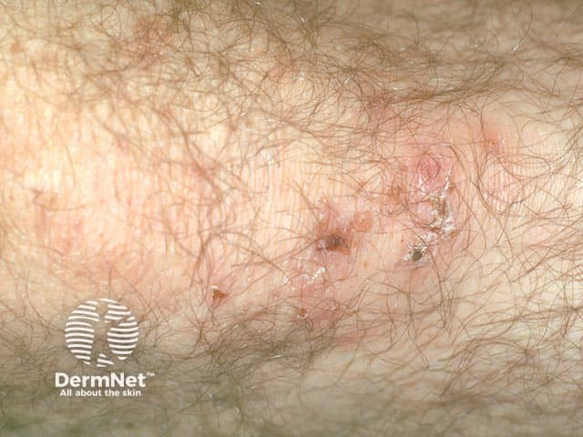
На снимке колена — крупный план эритематозных элементов на волосистом участке кожи с явными следами расчёсов. Обратите внимание на сочетание: эритема, экскориации и корочки на одном небольшом участке — это и есть истинный полиморфизм в сочетании с ложным, когда расчёсы дополняют клинику. Именно такая картина на разгибательной поверхности должна сразу поднимать в голове вопрос о дерматите Дюринга.
Дифференциальная диагностика
Дерматит Дюринга чаще всего приходится разграничивать с буллёзным пемфигоидом и пузырчаткой. Различия между этими тремя болезнями касаются сразу нескольких уровней — клиники, гистологии и иммунологии. Удобнее всего сравнить их вместе.
| Признак | Дерматит Дюринга | Буллёзный пемфигоид | Вульгарная пузырчатка |
|---|---|---|---|
| Полиморфизм сыпи | Истинный: везикулы, папулы, уртикарии, пузыри одновременно | Преимущественно напряжённые пузыри, размером до 5–10 см | Вялые пузыри, быстро лопающиеся с образованием эрозий |
| Симптом Никольского | Отрицательный | Отрицательный | Положительный |
| Акантолитические клетки (цитология) | Отсутствуют; много эозинофилов | Отсутствуют; эозинофилы 20–30% | Присутствуют (клетки Тцанка) |
| Уровень пузыря (гистология) | Субэпидермальный; папиллярные микроабсцессы, «ядерная пыль» | Субэпидермальный; без папиллярных микроабсцессов | Интраэпидермальный (акантолиз) |
| Иммунные отложения (ПИФ) | IgA гранулами на верхушках сосочков дермы | IgG линейно по базальной мембране; у 80% больных — антитела IgG к белку базальной мембраны при непрямой ИФ | IgG в межклеточной субстанции эпидермиса |
| Связь с глютеновой энтеропатией | Характерна | Не характерна | Не характерна |
| Проба Ядассона | Положительная | Отрицательная | Отрицательная |
| Основное лечение | Дапсон 100–200 мг/сут + безглютеновая диета | Кортикостероиды 40–60 мг/сут, снижение до 10–15 мг/сут | Кортикостероиды 1 мг/кг/сут |
Разберём таблицу для тех, кто её пролистал. Все три болезни дают пузыри на коже — на этом сходство заканчивается. При дерматите Дюринга сыпь истинно полиморфна: врач одновременно видит эритематозные пятна, уртикароподобные элементы, папулы и везикулы — такого разнообразия при пузырчатке нет. При буллёзном пемфигоиде доминируют крупные напряжённые пузыри — иногда до 5–10 см в диаметре.
Симптом Никольского отрицателен и при дерматите Дюринга, и при пемфигоиде; при пузырчатке — положителен, что сразу сужает дифференциальный ряд. Акантолитические клетки — маркер пузырчатки: при дерматите Дюринга и при пемфигоиде их нет, зато много эозинофилов; при пемфигоиде в мазках-отпечатках их доля достигает 20–30%.[6, с. 128]
Ключевое гистологическое различие — уровень пузыря. При пузырчатке он внутриэпидермальный — внутри шиповатого слоя, там, где происходит акантолиз. При дерматите Дюринга и пемфигоиде пузырь субэпидермальный — под эпидермисом. Однако при дерматите Дюринга рядом с пузырём обязательно видны папиллярные микроабсцессы и «ядерная пыль», которых при пемфигоиде нет.
Иммунофлюоресценция расставляет окончательно. При дерматите Дюринга — IgA гранулами на верхушках сосочков дермы. При пемфигоиде — IgG линейно по базальной мембране, и у 80% больных пемфигоидом в крови циркулируют IgG-антитела к белку базальной мембраны. При пузырчатке — IgG в межклеточных пространствах эпидермиса. Лечение тоже различается: при дерматите Дюринга ключевую роль играют сульфоны, тогда как при пузырчатке главным препаратом остаются кортикостероиды в дозе 1 мг/кг в сутки.
Дифференциальный диагноз дополнительно проводят с буллёзной токсидермией — её отличает чёткая связь с приёмом лекарственного препарата и быстрое разрешение после его отмены.[6, с. 130]
Лечение
Лечение строится на двух столпах — диете и лекарстве. Из рациона исключают продукты, содержащие глютен и йод; ограничивают соль; запрещают йодосодержащие медикаменты. Соблюдение безглютеновой диеты со временем снижает потребность в лекарственной терапии, поскольку устраняет источник иммунных комплексов.
Главный препарат — дапсон (диаминодифенилсульфон, ДДС), представитель группы сульфонов. Он тормозит действие лизосомальных ферментов нейтрофилов, блокируя тем самым формирование папиллярных микроабсцессов — того самого начального звена, с которого и разворачивается воспаление в сосочках дермы. Назначают дапсон по 100–200 мг в сутки. На фоне приёма необходим контроль гемограммы: препарат способен вызывать гемолитическую анемию, особенно у лиц с дефицитом глюкозо-6-фосфатдегидрогеназы. При длительном лечении добавляют фолиевую кислоту для профилактики мегалобластных изменений.
При недостаточном ответе на сульфоны подключают кортикостероиды и иммуносупрессивные препараты. Наружно применяют противозудные и противовоспалительные средства — для облегчения острого периода. Все пациенты подлежат обследованию на сопутствующие желудочно-кишечные, инфекционные и онкологические заболевания — особенно при атипичном течении у пожилых.
Итог раздела. Дерматит Дюринга — не «герпес», а IgA-опосредованный аутоиммунный дерматоз на почве глютеновой энтеропатии. Его метки — истинный полиморфизм сыпи, группировка на разгибателях и крестце, мучительный зуд, IgA-гранулы на верхушках сосочков дермы, положительная проба Ядассона и быстрый ответ на дапсон.
Синдром Лайелла и синдром Стивенса–Джонсона
Среди всех лекарственных реакций со стороны кожи два синдрома стоят особняком — не потому, что встречаются часто, а потому, что оба могут убить за несколько дней. Речь о токсическом эпидермальном некролизе — синдроме Лайелла — и о синдроме Стивенса–Джонсона. По существу это два конца одного патологического спектра: синдром Стивенса–Джонсона считается тяжёлой формой многоформной эритемы с поражением слизистых, а синдром Лайелла — его крайним, жизнеугрожающим продолжением с некрозом всего эпидермиса.
Чтобы понять, что происходит с кожей, нужно пройти по патогенетической цепочке. Триггер — чаще всего лекарство: сульфаниламиды, антиконвульсанты, аллопуринол, нестероидные противовоспалительные средства. Реже запускает процесс инфекция — микоплазма, вирусы герпеса, стрептококки. Триггер вызывает иммунный ответ, при котором цитотоксические Т-лимфоциты атакуют кератиноциты, несущие изменённый антиген. Кератиноциты гибнут через апоптоз — массово, на всей поверхности кожи. Эпидермис отслаивается от дермы пластами, как сгоревшая бумага. Это и есть токсический эпидермальный некролиз (toxic epidermal necrolysis, TEN): некроз не отдельных клеток, а всего эпидермиса, с образованием субэпидермальных и внутриэпидермальных пузырей.
Гистология при синдроме Лайелла показывает полный некроз эпидермиса: клетки всех слоёв погибшие, ядра пикнотичные или лизированные, между эпидермисом и дермой — субэпидермальная полость. Внутри эпидермиса при слиянии зон некроза образуются внутриэпидермальные пузыри. Дерма интактна — в этом принципиальное отличие от ожога, при котором гибнут и более глубокие слои. Не будь у кожи этой послойной организации, определить глубину поражения можно было бы только хирургически.
Клиническая картина синдрома Лайелла разворачивается стремительно. Сначала — озноб, высокая температура, болезненность кожи. Затем появляются вялые пузыри с дряблой, легко рвущейся покрышкой: содержимое их серозное или серозно-геморрагическое, давление изнутри минимальное — эпидермис уже мёртв и не держит форму. Посмотрите на снимок спины пациента: хорошо видно, как поражение распространяется на большую площадь, кожа выглядит отслоившейся и морщинистой, как промокшая ткань.

Симптом Никольского при синдроме Лайелла резко положителен: эпидермис сдвигается при малейшем прикосновении, скользит под пальцем, как мокрая бумага. Описаны три характерных клинических симптома, отражающих то же самое: симптом «смоченного белья» — кожа свисает складками; симптом «перчатки» — эпидермис сходит с кисти целиком; симптом «носков» — то же самое на стопах. Пузыри сливаются в обширные очаги, и возникает картина, давшая синдрому второе название: симптом ошпаренной кожи — кожный покров выглядит именно так, как после погружения в кипяток.
Поражение слизистых оболочек — обязательный компонент синдрома Лайелла. Развивается эрозивный блефароконъюнктивит: веки отёчны, конъюнктива покрыта эрозиями, нередко присоединяется иридоциклит с угрозой потери зрения. На снимке ниже — лицо пациента с синдромом Стивенса–Джонсона: отёк и эрозии захватывают область вокруг глаз и губы, слизистая рта сплошь эрозирована. Именно так выглядит тот же процесс на более ранней стадии.
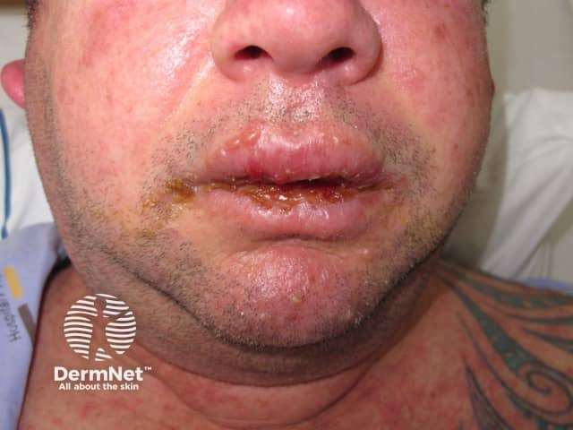
Одновременно поражаются слизистые гениталий: у женщин — вульва и влагалище, у мужчин — головка полового члена. Эрозии болезненны, осложняются вторичной инфекцией. Поражение слизистой дыхательных путей приводит к нарушению дыхания, мочевыводящих путей — к задержке мочи. Вся эта совокупность объясняет крайнюю тяжесть состояния.
Синдром Стивенса–Джонсона занимает промежуточную позицию между классической многоформной эритемой и синдромом Лайелла. Поражение кожи здесь также начинается с мишеневидных элементов — target lesions — тёмно-красных пятен с концентрическими кольцами. Взгляните на снимок ладони: множественные мишеневидные высыпания отчётливо видны на ладонной поверхности и запястье — это классические «мишени», ради которых синдром иногда называют «синдромом мишеневидных элементов».
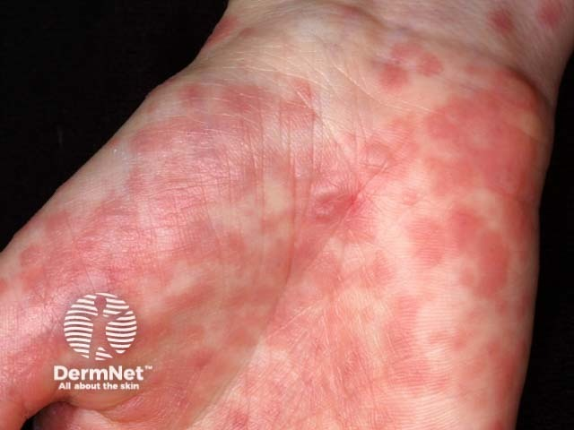
В центре таких элементов образуются пузыри, сливающиеся и вскрывающиеся с образованием болезненных эрозий. Поражение слизистых — обязательный признак синдрома Стивенса–Джонсона, отличающий его от простой многоформной эритемы: эрозии в полости рта мешают есть и говорить, поражение конъюнктивы грозит рубцовыми изменениями. Посмотрите на состояние стоп при этом синдроме: поверхность покрыта крупными вскрывшимися пузырями, ходьба становится невозможной — это не деталь, а маркер системности поражения.
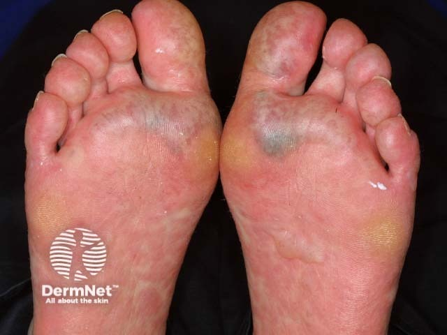
Этиология обоих синдромов сходна. Ведущая роль принадлежит лекарствам — именно поэтому при поступлении больного первым действием является отмена всех препаратов, принятых за последние четыре недели. Инфекционные триггеры встречаются чаще при синдроме Стивенса–Джонсона. Принципы лечения включают: немедленную отмену препарата-виновника, перевод в отделение интенсивной терапии или ожоговый центр (уход за кожей аналогичен уходу при обширных ожогах), инфузионную терапию для восполнения потерь жидкости через поражённую кожу, профилактику вторичного инфицирования. Дозы глюкокортикостероидов при синдроме Стивенса–Джонсона составляют 40–50 мг в день в пересчёте на преднизолон; общая продолжительность курса в среднем не более 2–3 недель. Вопрос о целесообразности системных стероидов при синдроме Лайелла остаётся дискуссионным: их раннее назначение одни авторы считают жизнеспасающим, другие — способным усугубить инфекционные осложнения.
Прогноз при синдроме Лайелла серьёзен: летальность при обширном поражении остаётся высокой даже в условиях современных ожоговых центров. При синдроме Стивенса–Джонсона прогноз лучше, однако рубцовые изменения роговицы могут привести к стойкому снижению зрения. Оба синдрома требуют экстренной госпитализации: промедление с отменой препарата-триггера и началом интенсивной терапии резко ухудшает исход.
Вирусные дерматозы: общая характеристика и классификация
Кожа — не просто барьер: это мишень для вирусов, которые умеют встраиваться в клетку-хозяина, перестраивать её изнутри и уходить в многолетнюю «спячку», чтобы вернуться при первом удобном случае. Вирусные дерматозы — то есть попросту поражения кожи и слизистых оболочек, вызванные вирусами, — составляют отдельную и клинически важную группу в дерматовенерологии. Их объединяет общий принцип: возбудитель действует внутри клетки, меняет её морфологию и оставляет на коже следы, по которым можно поставить диагноз ещё до лабораторного подтверждения.
Прежде чем разбирать отдельные болезни, полезно увидеть группу целиком. Можете поглазеть на эту классификацию в Таблице 1 — она сводит три семейства возбудителей, типичные морфологические субстраты и конкретные нозологии в одну схему. Прочитайте её или пропустите — ниже всё то же самое сказано словами, строка за строкой.
| Семейство | Основные представители | Морфологический субстрат | Типичные нозологии |
|---|---|---|---|
| Герпесвирусы (Herpesviridae) | ВПГ-1, ВПГ-2, VZV, ЦМВ, ВЭБ | Баллонирующая дистрофия, вакуольная дистрофия | Простой герпес, опоясывающий лишай, ветряная оспа |
| Папилломавирусы (Papillomaviridae) | ВПЧ (более 200 типов) | Дискератоз, койлоцитоз | Бородавки, остроконечные кондиломы, папилломы |
| Поксвирусы (Poxviridae) | Вирус контагиозного моллюска, вирус оспы | Дискератоз, внутриклеточные включения | Контагиозный моллюск |
Первое и самое большое семейство — герпесвирусы. Сюда входят вирус простого герпеса первого типа (ВПГ-1), второго типа (ВПГ-2), вирус ветряной оспы и опоясывающего лишая (VZV), цитомегаловирус и вирус Эпштейна–Барр. Все они — ДНК-содержащие вирусы с одной общей биологической чертой: однажды попав в организм, они остаются там навсегда, прячась в нервных ганглиях. Герпес-вирусные инфекции отличаются эпидемически широким распространением в человеческой популяции, персистирующим течением, хроническими рецидивами и сопровождаются депрессией иммунитета.[3, с. 26] Тяжёлое течение и частые рецидивы — это не просто неприятность: они могут быть маркером нарастающего иммунодефицита.[3, с. 26] Морфологический след герпесвирусов в эпидермисе — баллонирующая дистрофия: кератиноциты набухают, округляются и начинают свободно плавать в полости, заполненной серозно-фибринозным экссудатом, — буквально как воздушные шары в коробке.[6, с. 20] Рядом с ней нередко выявляется вакуольная дистрофия базального слоя — внутриклеточный отёк с образованием вакуолей и последующей гибелью клетки.[6, с. 20]
Второе семейство — папилломавирус человека (ВПЧ), то есть попросту группа вирусов, которые заставляют клетки эпидермиса бесконтрольно делиться и ороговевать. Описано более 200 типов ВПЧ; одни вызывают обычные бородавки, другие — остроконечные кондиломы на слизистых, третьи связаны с риском злокачественной трансформации. Морфологический субстрат здесь иной: дискератоз — преждевременное и неправильное ороговение отдельных клеток — и койлоцитоз — появление клеток с перинуклеарным просветлением, прямым следствием репликации вируса. В основе дискератоза лежит нарушение комплекса тонофиламенты–десмосомы с последующей агрегацией белков вокруг ядра.
Третье семейство — поксвирусы, то есть попросту крупные ДНК-вирусы, которые реплицируются прямо в цитоплазме клетки и оставляют там характерные включения, видимые под микроскопом. В дерматологии главный представитель этой группы — вирус контагиозного моллюска. Морфологический субстрат тот же дискератоз, но с особенностью: в клетках обнаруживаются массивные цитоплазматические тельца-включения (тельца Хендерсона–Патерсона), вытесняющие ядро на периферию.
Как видите в таблице, каждое семейство оставляет свой морфологический отпечаток. Это не случайно: субстрат определяется тем, как именно вирус взаимодействует с клеткой. Герпесвирусы вызывают катастрофический отёк — баллонирующую дистрофию. ВПЧ и поксвирусы нарушают нормальное ороговение — отсюда дискератоз. Спонгиоз, то есть межклеточный отёк с разрывом десмосом и образованием микрополостей, при вирусных дерматозах встречается реже и носит вторичный характер — он типичнее для экземы и аллергического дерматита.[6, с. 20]
Отдельного внимания заслуживает источник и пути передачи вируса простого герпеса, потому что здесь есть важная деталь, которую легко упустить. Источником заражения ВПГ служит инфицированный человек — и не только тот, у кого на губе видна характерная сыпь, но и тот, у кого инфекция протекает скрыто: вирус выделяется из слюны, слёз и содержимого везикул даже в период латентного течения.[3, с. 26] Передача происходит при прямом контакте — бытовом или половом, — а также воздушно-капельным путём.[3, с. 26] Возраст первого заражения предсказуем: ВПГ-1 чаще всего встречает человека в первые 3 года жизни — через поцелуи взрослых, общую посуду, игрушки; ВПГ-2 появляется, как правило, с началом сексуальной жизни.[3, с. 26]
Первичная герпетическая инфекция в 80% случаев протекает в субклинической, латентной форме — человек инфицируется, но ничего не замечает. Только в 20% случаев первичное заражение даёт клинические проявления — острый афтозный стоматит или картину, неотличимую от ОРВИ. При рецидивах с частотой 1 раз в 6 месяцев и реже при локализованном поражении применяется ацикловир в форме 5%-ного крема.
Связь вирусных дерматозов с иммунным статусом — пожалуй, самое клинически значимое, что нужно вынести из этого раздела. При ВИЧ-инфекции простой герпес приобретает атипичную клинику и персистирующее тяжёлое течение: сыпь диссеминируется, а без лечения формируются хронические глубокие язвы на лице, в полости рта, в области половых органов.[6, с. 224] Опоясывающий лишай нередко становится ранним симптомом СПИДа — он появляется ещё до развёрнутой клинической картины иммунодефицита.[6, с. 224] При атопическом дерматите нарушен кожный барьер и снижена местная иммунная защита, что открывает путь для генерализованной герпетической инфекции — герпетиформной экземы Капоши, одного из тяжёлых осложнений атопии.
Главный вывод раздела: вирусные дерматозы — не однородная группа, а три семейства с разными возбудителями, разными морфологическими субстратами и разной связью с иммунитетом; тяжесть течения и частота рецидивов напрямую отражают состояние иммунной системы пациента.
Простой и опоясывающий герпес
Герпес-вирусные инфекции — одни из самых распространённых вирусных болезней человека. По данным ВОЗ, заболеваемость вирусом простого герпеса занимает второе место после гриппа. Эти инфекции хронические, склонны к рецидивам и сопровождаются угнетением иммунитета; тяжёлое и частое рецидивирующее течение служит маркером нарастающего иммунодефицита.[3, с. 26]
Простой герпес
Herpes simplex (HSV, вирус простого герпеса) — ДНК-содержащий вирус с двумя серотипами. ВПГ-1 вызывает преимущественно негенитальные формы заболевания, ВПГ-2 — генитальные. Серотипы различаются набором белков-антигенов, рядом биологических свойств и преобладающим путём передачи в естественных условиях.[3, с. 26] При этом граница не абсолютна: ВПГ-1 способен поражать аногенитальную область, а ВПГ-2 — кожу и слизистые за её пределами. Инфицирование ВПГ-1 нередко происходит в первые три года жизни ребёнка, ВПГ-2 — с началом половой жизни.[3, с. 26] Источник заражения — инфицированный человек, причём как при клинических проявлениях, так и в период латентного течения; вирус выделяется со слюной, слезой, содержимым везикул.[3, с. 26]
Инкубационный период первичной инфекции составляет 2–14 дней. В 80% случаев первичное инфицирование протекает субклинически или латентно — человек переносит его, не замечая. Лишь у 20% инфицированных болезнь проявляется клинически: в виде ОРВИ или острого афтозного герпетического стоматита — с гингивитом, глосситом, герпетической ангиной.
Манифестная форма первичной инфекции начинается резко: температура поднимается до 39–40 °C, появляются слабость, головная боль, выраженная интоксикация. На слизистой полости рта — щёках, дёснах, языке, мягком и твёрдом нёбе, миндалинах — возникают отёк и гиперемия, затем сгруппированные везикулы, которые вскрываются с образованием эрозий или язв с полициклическим контуром. Болезненность, жжение, повышенное слюноотделение и регионарный лимфаденит дополняют картину. Выздоровление наступает через 2–3 недели.
Клинические варианты первичной инфекции: герпетический стоматит — наиболее частый, а также гингивит, глоссит, герпетическая ангина; возможны высыпания на различных участках кожи.
Патогенез рецидивов и влияние на иммунитет
После первичного контакта вирус не покидает организм. Сопровождаясь вирусемией, первичное инфицирование приводит к тому, что ВПГ проникает в сенсорные ганглии и многие клетки тела, проявляя особое сродство к форменным элементам крови и иммуноцитам. Там он переходит в латентное состояние. При снижении иммунитета вирус распространяется из сенсорных ганглиев по периневральным пространствам и повторно достигает кожи или слизистых — так возникает рецидив. Полная элиминация вируса невозможна.
ВПГ активно подавляет иммунную защиту: снижает клеточный и гуморальный иммунитет, интерфероногенную способность лейкоцитов, активность естественных киллеров, антителозависимую цитотоксичность, абсолютное число и функциональную активность Т-лимфоцитов. В итоге формируется состояние вторичного иммунодефицита.
Вторичный, или рецидивирующий, герпес возникает при активации вируса в уже инфицированном организме. Частота рецидивов, их тяжесть, локализация и распространённость зависят от типа вируса и иммунного статуса пациента.
Среди осложнений ВПГ-инфекции — участие в развитии неопластических процессов (рак шейки матки, рак простаты) и индукция атеросклероза.
Атипичные и генерализованные формы
Атипичные формы простого герпеса многообразны. Абортивная проявляется лишь незначительной гиперемией и папулёзными элементами без типичных везикул. Отёчная — выраженным отёком и гиперемией, где пузырьки почти незаметны. Буллёзная — крупными сливными пузырями наряду с везикулами. Геморрагическая — кровянистым содержимым везикул. Язвенно-некротическая форма развивается при тяжёлом иммунодефиците: на её фоне образуются язвы с выраженной интоксикацией.
Особого внимания заслуживает генерализованная форма — варицеллеформный пустулёз Капоши. Она развивается у больных атопическим дерматитом и экзематозными реакциями. Острое начало, высокая температура, множественные везикулы с западением в центре — их содержимое становится геморрагическим при присоединении вторичной бактериальной флоры, появляются геморрагические корки, пустулы, эрозии, лимфаденопатия. Возможно поражение нервной системы. Поражения нервной системы при генерализованной герпетической инфекции включают серозный менингит, менингоэнцефалит и энцефалит; герпетический энцефалит протекает тяжело — с выраженной интоксикацией, общемозговой и очаговой симптоматикой.
У пациентов с ВИЧ/СПИДом простой герпес приобретает атипичную клинику и персистирующее тяжёлое течение: сыпь диссеминированная, без лечения формируются хронические язвы на лице, во рту, на половых органах; язвы углубляются, к ним присоединяется вторичная бактериальная инфекция. Опоясывающий лишай у лиц из группы риска может быть ранним симптомом СПИДа — нередко он появляется ещё до развёрнутой клиники иммунодефицита.[6, с. 224]
Опоясывающий герпес
Herpes zoster — опоясывающий лишай — вызывается VZV (Varicella zoster virus), вирусом герпеса III типа, тем же возбудителем, что и ветряная оспа. Болезнь — не новое заражение, а реактивация: вирус, сохранявшийся в латентном состоянии в сенсорных ганглиях после перенесённой ветряной оспы, пробуждается под влиянием соматических заболеваний, инфекций, переохлаждения, лучевого воздействия.[6, с. 74] Болеют преимущественно люди среднего и старшего возраста; чаще болеют мужчины 40–70 лет в весенний и осенний периоды.[6, с. 74]
Пути передачи — воздушно-капельный, контактный, парентеральный; возможна передача от матери плоду. Заразность сохраняется с конца инкубационного периода до отпадения корочек, особенно в первые 7 дней высыпаний.
Заболевание нередко начинается с продромальных явлений: недомогание, подъём температуры, слабость. Затем в зоне иннервации поражённого нерва возникают интенсивные жгучие монолатеральные боли — они усиливаются при движении, охлаждении, прикосновении и порой симулируют инфаркт миокарда, почечную или печёночную колику. На гиперемированной и отёчной коже появляются сгруппированные везикулы с серозным содержимым, располагающиеся строго по ходу нерва и его ветвей — чаще вдоль межрёберных нервов, по ходу лицевого и тройничного нервов.[6, с. 74] Содержимое везикул мутнеет, образуются пустулы, после их вскрытия остаются корки.
Посмотрите на снимок ниже — он показывает, как именно выглядят высыпания при опоясывающем лишае у пациента с иммунодефицитом.
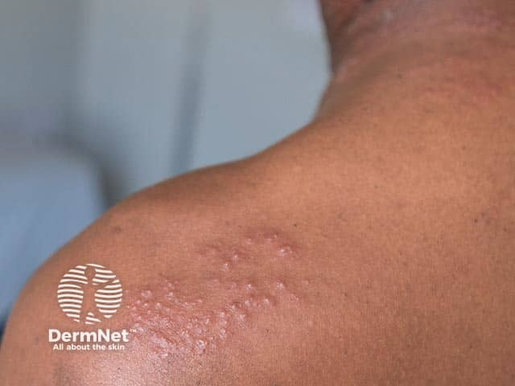
На этом кадре хорошо видна характерная черта herpes zoster: везикулы собраны в плотные гроздья и расположены полосой — строго по ходу кожного нерва, не переходя на противоположную сторону. Обратите внимание, что высыпания охватывают область плеча и основание шеи единым полем, не рассыпаясь беспорядочно по коже. Именно такое линейное, дерматомное распределение — ключевой признак, отличающий herpes zoster от любого другого везикулёзного дерматоза. При ВИЧ, как в данном случае, высыпания могут быть особенно обширными и сливными.
Высыпания разрешаются через 1–3 недели. Формы опоясывающего лишая делят на локализованную, распространённую и генерализованную. Распространённая форма — высыпания не только по ходу поражённого нерва, но и на других участках кожи и слизистых — возникает при иммунодепрессии.[3, с. 33] Локализованная включает поражение межпозвоночных ганглиев грудного и поясничного отделов, офтальмологическую форму (поражение ганглия тройничного нерва) и поражение коленчатого узла лицевого нерва.
Офтальмологическая форма
Офтальмологическая форма выделяется особо — из-за угрозы зрению. Типично монолатеральное поражение кожи и слизистых; пациента беспокоят светобоязнь, слезотечение, блефароспазм, выраженные невралгические боли, которые могут распространяться на всё лицо, шею и волосистую часть головы.[3, с. 33] Главная опасность — пузырьковые высыпания на роговице: они приводят к кератиту с образованием рубцов и снижением остроты зрения.[3, с. 33]
Осложнения опоясывающего лишая
Два осложнения, о которых врач обязан помнить заранее: постгерпетическая невралгия и рубцовая алопеция.
Постгерпетическая невралгия — боли по ходу поражённого нерва, которые сохраняются уже после полного разрешения кожных высыпаний, иногда на протяжении нескольких месяцев. Это не остаток острой боли, а самостоятельное хроническое состояние: нервные волокна повреждены вирусом, и болевые сигналы продолжают идти даже в отсутствие сыпи. Здесь удобно представить себе застрявший дверной звонок: кнопку давно отпустили, а звонок продолжает звенеть — провод замкнут внутри, и внешнего раздражителя уже нет. Механизм невралгии примерно таков: центральная сенситизация и повреждение миелиновых оболочек не позволяют боли прекратиться вместе с воспалением.
Рубцовая алопеция — утрата волос в зоне перенесённого поражения — возникает, когда воспаление захватывает волосяные фолликулы. Опоясывающий лишай входит в перечень вирусных заболеваний, способных привести к рубцовой алопеции, наряду с ветряной оспой.[6, с. 155] В отличие от нерубцовых форм выпадения волос, утраченные фолликулы восстановиться не могут.
Лечение
Основу терапии обеих инфекций составляют противовирусные препараты.[6, с. 36] Наиболее эффективны препараты последнего поколения: ацикловир (aciclovir) — синтетический аналог нуклеозида, который блокирует вирусную ДНК-полимеразу; его аналоги — фамцикловир (фамвир) и валацикловир (валтрекс). При рецидивах простого герпеса 1 раз в 6 месяцев и реже достаточно местной и общей терапии: наружно — 5% крем ацикловира, 2–5% мазь теброфена, анилиновые красители. При рецидивах 1 раз в 3 месяца и чаще переходят к этапной терапии.
Этапная терапия строится в четыре этапа. Первый — лечение рецидива: этиотропные препараты внутривенно, перорально или местно, интерфероны, иммуномодуляторы. Второй — закрепление эффекта и санация очагов хронической инфекции. Третий — специфическая профилактика герпетическими вакцинами (живыми, инактивированными, рекомбинантными) при достижении стойкой ремиссии. Четвёртый — диспансерное наблюдение 1 раз в 3–6 месяцев.
При опоясывающем лишае противовирусную терапию начинают как можно раньше и продолжают до прекращения высыпаний. Практические схемы: фамвир 250 мг 3 раза в сутки в течение 7 дней или валтрекс 0,5 г 2 раза в день в течение 5 дней. Для купирования болевого синдрома применяют салицилаты, диакарб (снижает отёк нервов), ганглиоблокаторы; для коррекции микрососудистых нарушений — курантил. Новокаиновые блокады и физиотерапия (диатермия, токи Бернара, лазер) дополняют медикаментозное лечение. Витамины группы В (тиамина хлорид или бромид вводят внутримышечно по 1,0 мл 1% раствора в сутки, на курс 7—30 инъекций; пиридоксин — В6) и витамин С включаются в схему как нейротропные и антиоксидантные средства.[3, с. 33] Наружно на очаги поражения 4—6 раз в сутки в течение 5—7 дней наносят 0,25—1% риодоксоловую или бонафтоновую мазь, а также спиртовые и водные растворы анилиновых красителей.[3, с. 33] При тяжёлых и распространённых формах необходима госпитализация в инфекционный стационар; при присоединении вторичной бактериальной инфекции — антибиотики широкого спектра. У ВИЧ-инфицированных ацикловир назначают внутрь или внутривенно; следует помнить, что существуют ацикловирорезистентные формы вируса.[6, с. 224]
Профилактика герпетических инфекций строится на тех же принципах, что и борьба с болезнями, передающимися контактным (в том числе половым) и воздушно-капельным путём. Профилактика опоясывающего лишая — прежде всего исключение факторов, снижающих напряжённость противовирусного иммунитета: переохлаждения, стресса, бесконтрольной иммуносупрессивной терапии.
Бородавки (вирусные папилломы) и папилломавирусные поражения кожи
Кожа постоянно контактирует с окружающей средой, и вирус папилломы человека (ВПЧ) — один из самых распространённых её «гостей». Возбудители этой группы болезней — ДНК-содержащие вирусы папилломы человека, относящиеся к семейству паповавирусов.[3, с. 35] Разные типы ВПЧ тропны к разным участкам кожи и слизистых, что и объясняет разнообразие клинических форм: один тип вызывает болезненные подошвенные уплотнения, другой — плоские папулы на лице, третий — разрастания в паховой области. ВПЧ-1 отвечает за подошвенные бородавки, ВПЧ-2 — за вульгарные, ВПЧ-3 — за плоские, ВПЧ-4 — за верруциформную дисплазию, ВПЧ-5, 6, 11 — за остроконечные кондиломы.[3, с. 35] Принципиально важно: все папилломавирусы способны играть роль онкогенов, и это не теоретическая оговорка — риск злокачественной трансформации реален при ряде форм.[3, с. 35]
Передача ВПЧ происходит контактным путём — непосредственно от человека к человеку, через предметы обихода, а также путём аутоинокуляции, когда сам пациент разносит вирус расчёсыванием с одного участка кожи на другой.[3, с. 35] Инкубационный период варьирует от нескольких месяцев до нескольких лет — именно поэтому пациент нередко не может вспомнить, когда и от кого заразился.[3, с. 35] Решающую роль в том, разовьётся ли болезнь, играет состояние клеточного звена иммунитета: при его ослаблении бородавки множатся, при восстановлении — способны регрессировать самостоятельно.[3, с. 35]
Вульгарные бородавки (обыкновенные, от лат. verruca vulgaris) вызываются преимущественно ВПЧ-2 и ВПЧ-3. Типичная локализация — тыльная поверхность кистей, пальцы рук, околоногтевая зона, реже лицо.[3, с. 35] Элементы представляют собой округлые плотноватые невоспалительные узелки серовато-жёлтого цвета с неровной шероховатой поверхностью, возвышающиеся над окружающей кожей.[3, с. 35] Посмотрите на снимок чуть ниже: хорошо видно именно это сочетание — плотные, сидящие группами узелки с грубоватой поверхностью на тыле кисти.
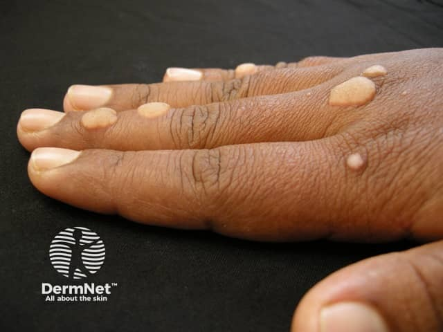
На фотографии хорошо заметна характерная группировка элементов и их серовато-жёлтый оттенок — признак, который сразу ориентирует на вульгарные бородавки, а не на другие папулёзные дерматозы. Гистологически в очагах обнаруживают акантоз (утолщение шиповатого слоя) и папилломатоз (разрастание дермальных сосочков); именно папилломатоз придаёт поверхности ту самую шероховатость, которую так легко распознать на ощупь.
Плоские бородавки (verruca plana, или юношеские) вызываются ВПЧ-3 и клинически выглядят совсем иначе. Это множественные милиарные или лентикулярные папулы диаметром 1–3 мм (чечевицеобразные узелки достигают 0,5—0,7 см в диаметре), цвета нормальной кожи или желтовато-коричневые, с гладкой поверхностью, лишь слегка приподнятые над уровнем эпидермиса. Располагаются на лице и тыле кистей; характерна линейная группировка — элементы выстраиваются цепочкой по ходу расчёса (феномен Кебнера): вирус инокулируется в микроповреждения кожи. Гистологически — акантоз в пределах эпидермиса без значительного папилломатоза, чем и объясняется плоский профиль элементов.
Подошвенные бородавки вызываются ВПЧ-1, ВПЧ-2 и ВПЧ-4. Их особенность — глубокое расположение: давление массы тела вдавливает бородавку внутрь, поэтому над поверхностью кожи виден лишь плоский гиперкератотический диск с грубой поверхностью. В центре — стержень из дермальных сосочков, по периферии — роговой валик; при срезании поверхностного слоя видны мелкие кровоточащие точки — устья тромбированных капилляров, чего никогда не бывает при обычной мозоли. Именно это отличие — точечные кровоизлияния — и разграничивает подошвенную бородавку от мозоли на практике. Резкая болезненность при ходьбе возникает тогда, когда бородавка располагается в местах наибольшей нагрузки: на пятке или на подушечке плюсневой кости. При слиянии нескольких мелких элементов формируется так называемый мозаичный рисунок.
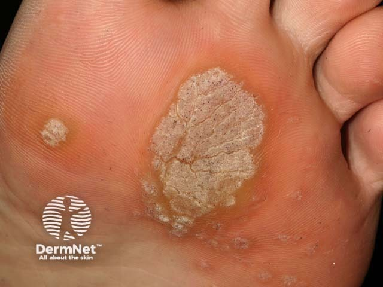
На этом снимке хорошо видна гиперкератотическая поверхность подошвенной бородавки с характерным роговым валиком по периферии и уплотнённым центром. Обратите внимание: поверхность не гладкая и блестящая, как у мозоли, а шероховатая, с нарушенным кожным рисунком — папиллярные линии прерываются на границе бородавки.
Папилломы слизистых и кожи — это одиночные или множественные сосочковые разрастания на тонкой ножке мягкой консистенции.[3, с. 36] На слизистых оболочках они розовые или белесоватые, на коже — от телесного до красно-коричневого цвета.[3, с. 36] Локализация разнообразна: полость рта, глотка, гортань, придаточные пазухи носа, слизистые мочевыводящих путей, кожа шеи, подмышечные области.[3, с. 36] Остроконечные кондиломы, вызванные ВПЧ-6 и ВПЧ-11, располагаются в области наружных половых органов, пахово-бедренных складках, перианально и представляют собой мелкие сосочкоподобные папулы на тонкой ножке.[3, с. 36]
Верруциформная эпидермодисплазия Левандовского–Лютца — редкое хроническое заболевание, развивающееся в детском возрасте вследствие врождённого дефекта иммунитета.[3, с. 36] Вирус (ВПЧ-4) в условиях иммунодефицита ведёт себя иначе, чем у здорового человека: высыпания не регрессируют, а неуклонно распространяются. Элементы при эпидермодисплазии Левандовского–Лютца — плоские округлые папулы диаметром до 2 см, склонные к слиянию, покрытые серовато-чёрными роговыми массами, пропитанными кожным салом, без тенденции к регрессу.[3, с. 36] При этом варианте бородавок часто происходит злокачественная трансформация — это главное, что делает данную форму клинически значимой.[3, с. 36]
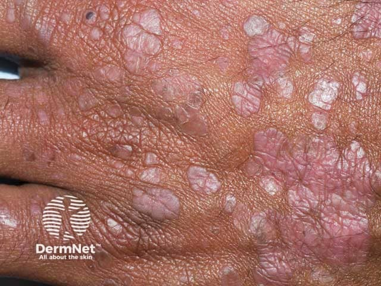
На снимке — тыльная поверхность кисти при верруциформной эпидермодисплазии: множественные сливающиеся папулы с тёмными роговыми наслоениями. Сравните с вульгарными бородавками на первом снимке: здесь элементы мельче, их несравнимо больше, они сливаются, а поверхность покрыта характерными сальными корками. Именно такая картина у ребёнка с иммунодефицитом должна настораживать в отношении онкологического риска.
Теперь посмотрите на Таблицу 1 — в ней сведены все клинические формы папилломавирусных поражений кожи.
| Форма | Типы ВПЧ | Локализация | Вид элемента | Особенности | Онкориск |
|---|---|---|---|---|---|
| Вульгарные (обыкновенные) бородавки | ВПЧ-2, ВПЧ-3 | Тыл кистей, пальцы, околоногтевая зона | Округлые плотноватые узелки серовато-жёлтого цвета с шероховатой поверхностью | Сгруппированные папулы; акантоз, папилломатоз | Низкий |
| Плоские (юношеские) бородавки | ВПЧ-3 | Лицо, тыл кистей | Папулы 1–3 мм, цвет кожи или желтовато-коричневый, гладкая поверхность | Линейная группировка при аутоинокуляции; акантоз в пределах эпидермиса | Низкий |
| Подошвенные бородавки | ВПЧ-1, ВПЧ-2, ВПЧ-4 | Подошва: пятка, подушечка плюсневой кости | Плоские твёрдые образования с гиперкератотической поверхностью, центральный стержень, роговой валик | Резкая болезненность при ходьбе; мозаичный рисунок при слиянии; точечные кровоизлияния при срезании (отличие от мозоли) | Низкий |
| Папилломы слизистых и кожи; остроконечные кондиломы | ВПЧ-5, ВПЧ-6, ВПЧ-11 | Слизистые рта, гортани, мочевыводящих путей; кожа шеи, аксиллы; аногенитальная зона | Одиночные или множественные сосочковые разрастания на тонкой ножке | На слизистых — розовые или белесоватые; на коже — от телесного до красно-коричневого | Умеренный (ВПЧ-6, 11) |
| Эпидермодисплазия Левандовского–Лютца | ВПЧ-4 | Кисти, предплечья, голени | Плоские округлые папулы до 2 см, сливающиеся, с серовато-чёрными роговыми массами | Врождённый иммунодефект; без тенденции к регрессу | Высокий |
Разберём, что в этой таблице важно для практики. Вульгарные бородавки вызываются ВПЧ-2 и ВПЧ-3, располагаются на тыле кистей и пальцах, выглядят как сгруппированные плотноватые узелки серовато-жёлтого цвета с шероховатой поверхностью — онкологический риск при них низкий. Плоские бородавки — ВПЧ-3, папулы 1–3 мм с гладкой поверхностью и линейной группировкой при расчёсах — тоже низкий риск. Подошвенные бородавки — ВПЧ-1, ВПЧ-2, ВПЧ-4: плоские, твёрдые, резко болезненные в местах давления, при слиянии дают мозаичный рисунок; при срезании видны точечные кровоизлияния, которых нет при мозоли. Папилломы слизистых и кожи с кондиломами — ВПЧ-5, 6, 11, умеренный онкологический риск. И отдельно — эпидермодисплазия Левандовского–Лютца: ВПЧ-4, папулы до 2 см с тёмными роговыми наслоениями, врождённый иммунодефект, высокий риск злокачественной трансформации.
Теперь — короткий разбор случая, который показывает, как эта схема работает в кабинете врача.
Что видит врач. На приём пришёл мужчина с болезненным уплотнением на подошве правой стопы. На подошве — в области пятки — плоское твёрдое образование с грубой гиперкератотической поверхностью и нарушенным кожным рисунком; при надавливании резко болезненно. Пациент считает это мозолью.
Что он из этого выводит. Врач срезает поверхностный роговой слой скальпелем: под ним видны мелкие тёмно-красные точки — кровоточащие концы тромбированных капилляров дермальных сосочков. При мозоли кожный рисунок непрерывен, сосочков под роговым слоем нет, и точечного кровотечения не бывает. Клиническая картина однозначно указывает на подошвенную бородавку, вызванную ВПЧ-1 или ВПЧ-2.
Эффективность различных методов деструкции бородавок колеблется от 50 до 94%.
Что делает дальше. Назначается деструктивное лечение — криодеструкция или лазерная деструкция; параллельно оценивается иммунный статус, поскольку единичные подошвенные бородавки у взрослого без видимых причин — повод уточнить состояние клеточного звена иммунитета. Кондилин или подофиллотоксин здесь не применяют — они показаны при остроконечных кондиломах.
Остроконечные кондиломы в запущенных случаях способны разрастаться до значительных размеров. На снимке ниже — гигантские аногенитальные кондиломы у пациента с ВИЧ-инфекцией: крупное дольчатое экзофитное образование, наглядно демонстрирующее, что происходит при глубоком подавлении клеточного иммунитета.
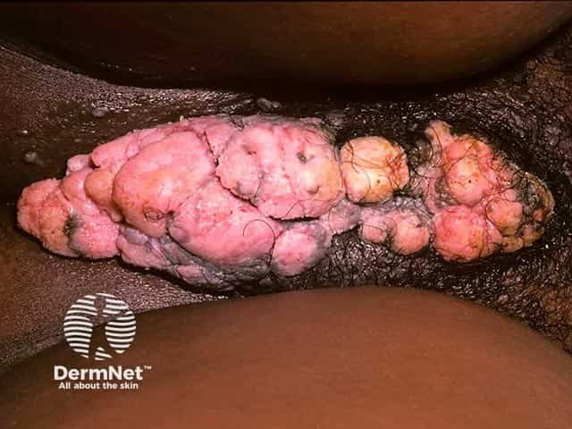
Именно такой исход — гигантские разрастания при иммунодефиците — подчёркивает, почему состояние клеточного иммунитета так значимо при всех папилломавирусных поражениях. У иммунокомпетентного человека те же ВПЧ-6 и ВПЧ-11 дают лишь мелкие кондиломы; при ВИЧ-инфекции процесс выходит из-под контроля.
Лечение папилломавирусных поражений включает два направления: общее — противовирусная терапия и иммуномодулирующая терапия для восстановления клеточного иммунитета; местное — деструктивные методы (криодеструкция, электрокаустика, лазерная деструкция, воздействие растворами кислот, кюретаж) и цитотоксические препараты: кондилин, подофиллотоксин, 5-фторурацил.[3, с. 36] Ключевой вывод раздела: тип ВПЧ определяет клиническую форму и онкологический риск, а состояние клеточного иммунитета — тяжесть и распространённость процесса.
Остроконечные кондиломы
Среди всех вирусных дерматозов генитальной области остроконечные кондиломы занимают особое место: это не просто косметический дефект, а инфекция, передающаяся половым путём, с доказанной связью со злокачественными опухолями. Возбудитель — вирус папилломы человека, прежде всего ВПЧ-6 и ВПЧ-11; именно эти типы отвечают за подавляющее большинство аногенитальных разрастаний, тогда как онкогенные типы — 16-й и 18-й — стоят за раком шейки матки и вульвы. Важно понимать порядок величин: типов ВПЧ насчитывают более ста, но на долю 6-го и 11-го приходится основная масса именно доброкачественных кондилом, тогда как канцерогенный потенциал сосредоточен в совершенно других типах. Это практически важно: обнаружение кондилом само по себе не означает высокого онкологического риска, однако требует обследования партнёра и исключения сопутствующих инфекций.
Вирус передаётся преимущественно половым путём, что ставит остроконечные кондиломы в ряд классических ИППП.[6, с. 76] Предрасполагающими факторами служат мацерация кожи, гнойные выделения при урогенитальных инфекциях, трихомониазе и других урогенитальных инфекциях, а также плохой гигиенический уход за аногенитальной областью. Там, где слизистая переходит в кожу, барьерная функция эпителия ослаблена — и именно здесь вирус проникает в базальный слой.
Морфологически остроконечные кондиломы — это вегетации (от лат. vegetatio — разрастание): сосочковые выросты, возникающие вследствие разрастания сосочкового слоя дермы с одновременным утолщением шиповатого слоя эпидермиса.[5, с. 16] На ощупь они мягкие, поверхность покрыта многослойным плоским эпителием; основание сужено в виде ножки, и разрастания чётко делятся на дольки — характерный признак, полезный при дифференциальной диагностике.[6, с. 76] Когда отдельные узелки сливаются, образуется картина, напоминающая цветную капусту или петушиный гребень. Процесс, при котором такие разрастания захватывают обширную площадь, называют кондиломатозом. Без надлежащего ухода поверхность кондилом мацерируется, сосочки эрозируются, появляется неприятный запах.[6, с. 76]
Типичные места поражения — наружные половые органы, пахово-бедренные складки, межъягодичная складка и перианальная область; нередко вовлекаются слизистая уретры, прямой кишки, полость рта и конъюнктива. В самом начале на коже видны мелкие сосочкоподобные папулы на тонкой ножке цвета нормальной кожи — и именно в этой фазе поставить диагноз труднее всего. Здесь помогает простой приём: протирание очага 5% уксусной кислотой (метод просветления) делает мелкие генитальные бородавки заметно белее здоровой кожи, позволяя выявить их там, где невооружённый глаз ещё ничего не видит.
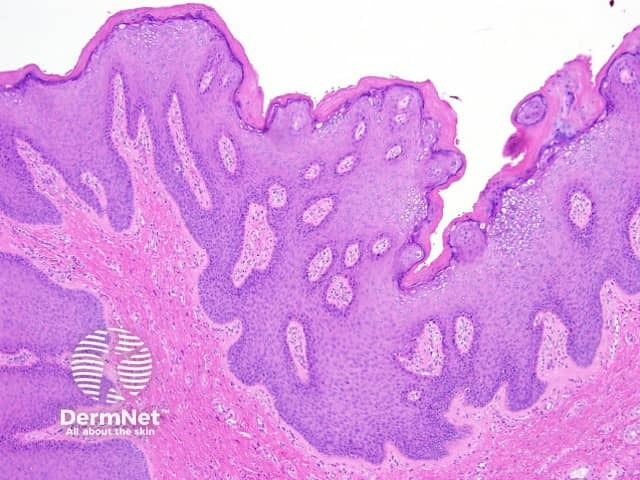
Посмотрите на гистологический микропрепарат выше. Хорошо различима дольчатая архитектура разрастаний: удлинённые сосочки дермы, покрытые многослойным плоским эпителием, формируют выросты, которые на срезе и дают ту самую картину «лепестков». Обратите внимание на широкую ножку у основания — именно её наличие и отсутствие дольчатости становятся ключевыми ориентирами при дифференциальной диагностике.
Главный вопрос дифференциальной диагностики — отличить остроконечные кондиломы от широких кондилом вторичного сифилиса. Широкие кондиломы имеют медно-красный цвет, широкое инфильтрированное основание, дольчатость им не свойственна, а в отделяемом обнаруживают бледные трепонемы. Гигантские аногенитальные кондиломы необходимо дифференцировать с раком кожи.
Лечение строится на нескольких группах методов.[6, с. 76] Деструктивные физические методы — хирургическое иссечение, электрохирургия, криодеструкция, лазеротерапия — убирают видимые разрастания механически. Химическая деструкция достигается азотной и трихлоруксусной кислотами, феrezолом; при аногенитальных поражениях применяют цитотоксические препараты — подофиллин, подофиллотоксин, 5-фторурацил. Третья группа — иммунные препараты: альфа-, бета- и гамма-интерфероны и иммуномодуляторы. На практике часто используют комбинированные схемы, поскольку ни один из методов не гарантирует отсутствия рецидива: вирус сохраняется в клетках базального слоя за пределами видимых очагов.
Практический вывод раздела прост: остроконечные кондиломы — ИППП с онкологическим контекстом, поэтому каждый пациент требует обследования на сопутствующие генитальные инфекции и наблюдения в динамике, даже после успешной деструкции.
Контагиозный моллюск
Кажется, что раз болезнь называется «моллюск», она как-то связана с морскими животными. На деле название отражает только внешнее сходство: белый полушаровидный узелок с ямкой в центре напоминает раковину моллюска — и ровно это сходство зафиксировано в термине. Контагиозный моллюск — вирусное заболевание кожи, при котором появляются белые полушаровидные узелки с центральным вдавлением.
Возбудитель относится к семейству поксвирусов — тех же, что вызывают оспу, — и патогенен исключительно для человека. Передача происходит при прямом контакте с больным или через предметы гигиены, у взрослых нередко — при сексуальных контактах, поэтому контагиозный моллюск с аногенитальной локализацией относят к инфекциям, передаваемым половым путём. В детских коллективах возможны эпидемические вспышки. Дети до года болеют редко: материнский иммунитет защищает их в первые месяцы жизни.
Заболевание встречается чаще в жарком климате, а среди факторов риска — атопический дерматит, экзема, саркоидоз и любая иммуносупрессия. У лиц среднего и пожилого возраста провоцирующим фактором нередко служит длительное лечение кортикостероидами и цитостатиками. У ВИЧ-инфицированных инфекция принимает диссеминированный характер, высыпания многочисленны и упорны.
Патогенез укладывается в несколько последовательных шагов. Вирус внедряется в кератиноциты базального слоя и запускает их усиленное деление. По мере того как клетки продвигаются в шиповатый слой, в них накапливается вирусная ДНК. Постепенно формируется узелок, центр которого разрушается — здесь и образуется характерная ямка. Гистологически центральная часть узелка представлена детритом, содержащим гиалиновые тела диаметром 25 мкм с вирусным материалом внутри — это и есть тельца моллюска. Воспалительные изменения в дерме незначительны; лишь при долго существующих элементах может формироваться хронический гранулематозный инфильтрат.
С точки зрения гистологии важно, что при контагиозном моллюске развивается доброкачественный дискератоз — преждевременное автономное ороговение отдельных кератиноцитов, в основе которого лежит нарушение комплекса тонофиламенты–десмосомы: контактный слой десмосом растворяется, кератин агрегирует вокруг ядра. Тот же механизм, но злокачественный, наблюдается при раке кожи — здесь же процесс остаётся доброкачественным.[6, с. 19]
Посмотрите на гистологические срезы выше. На них хорошо видна чашеобразная форма узелка с инвертированной гиперплазией эпидермиса — эпидермис как бы вворачивается внутрь, образуя полость. Именно в этой центральной полости и скапливаются тельца моллюска — крупные включения в цитоплазме кератиноцитов, которые при обычной окраске выглядят как гомогенные эозинофильные массы. Дерма вокруг практически не изменена — признак, отличающий контагиозный моллюск от нагноившихся или изъязвившихся элементов, где картина будет совершенно иной.
Инкубационный период — от 14 дней до 6 месяцев. Клиническая картина характерна. Элементы — блестящие, перламутрово-белые или серовато-жёлтые, полушаровидные папулы. В центре каждой — пупковидное вдавление, то есть небольшое пупкообразное углубление, которое и служит главным диагностическим признаком. При сдавлении пинцетом из этого углубления выдавливается белесоватая кашицеобразная масса — тот самый детрит с тельцами. Субъективных ощущений, как правило, нет.
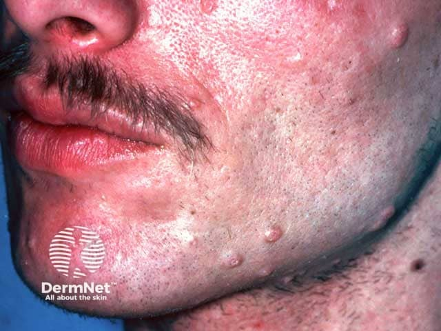
На снимке выше — лицо и шея пациента с ВИЧ-инфекцией. Обратите внимание: элементов много, они разного размера, часть из них уже достигла нескольких миллиметров в диаметре. Именно так выглядит диссеминированная форма. Медленно увеличиваясь, папула может достичь диаметра 5–10 мм за 6–12 недель. Пупковидное вдавление хорошо заметно на более крупных элементах — центр как будто слегка продавлен внутрь, а сама поверхность остаётся гладкой и блестящей. У иммунокомпетентного пациента элементов значительно меньше.
Обычно высыпания располагаются на шее, туловище — особенно в области подмышечных впадин.[3, с. 37] При половом пути заражения поражается аногенитальная область: лобок, половые органы, внутренняя поверхность бёдер. Реже встречается локализация на лице, в том числе на веках, на подошвах и слизистой оболочке щёк.[3, с. 37]
Без лечения элементы существуют 6–9 месяцев и затем разрешаются самостоятельно, однако некоторые сохраняются до 3–4 лет.[3, с. 37] После травмы или спонтанно папулы могут нагнаиваться и изъязвляться — и парадоксально, именно нагноение нередко ускоряет их исчезновение.[3, с. 37] Возможна аутоинокуляция с появлением новых элементов.
Лечение — механическое: выдавливание пинцетом или выскабливание ложечкой Фолькманна с последующей обработкой 2% спиртовым раствором йода. Применяют также диатермокоагуляцию. При диссеминированных формах назначают метисазон (0,1–0,6 г 2 раза в день курсом 7 дней) и интерферон — 3–4 капли интраназально 4–5 раз в сутки. У ВИЧ-инфицированных те же препараты применяют в высоких дозах длительными курсами, поскольку на фоне иммунодефицита инфекция склонна к рецидивированию и распространению. Ребёнка изолируют из детского коллектива до полного выздоровления; контактным детям с профилактической целью назначают интерферон интраназально.
Лечение вирусных дерматозов: методы и принципы
Лечение вирусных поражений кожи строится по трём слоям, и понять их проще всего именно в таком порядке: сначала удар по самому вирусу — этиотропная терапия, затем поддержка иммунного ответа, и наконец разрушение уже сформировавшихся очагов. Выбор между этими слоями определяется нозологией и состоянием иммунитета пациента. Рассмотрим, как это работает на практике.
Этиотропная терапия при герпетической инфекции — ацикловир и препараты его ряда: валтрекс (валацикловир) и фамвир (фамцикловир). Они наиболее эффективны именно при герпесе — как простом, так и опоясывающем.[6, с. 36] Противовирусные средства имеют системные и наружные лекарственные формы, и целесообразно применять их параллельно.[6, с. 36] При лёгком течении с рецидивами не чаще раза в полгода и локализованным поражением достаточно наружного ацикловира в форме 5%-ного крема; одновременно используют водные и спиртовые растворы анилиновых красителей.[3, с. 31] При распространённом поражении или частых рецидивах общую терапию противовирусными препаратами начинают как можно раньше и продолжают до прекращения высыпаний.[3, с. 33] Особого внимания требуют пациенты с иммунодефицитом: у лиц, инфицированных ВИЧ, герпетическая инфекция нередко даёт персистирующее тяжёлое течение с диссеминированной сыпью и хроническими язвами, и в таких случаях ацикловир вводят внутрь или внутривенно, а дозу препарата и продолжительность приёма увеличивают — курс может растянуться на несколько месяцев, доза возрастает вдвое.
При опоясывающем герпесе этиотропная схема та же — те же препараты, что и при простом герпесе, начатые как можно раньше.[3, с. 33] Патогенетическую терапию дополняют препараты интерферона и иммуномодуляторы. Симптоматическое лечение направлено на устранение болевого синдрома и вторичных гнойных осложнений: применяют новокаиновую блокаду, диатермию паравертебральных областей, витамины группы В и витамин С. Наружно — спиртовые и водные растворы анилиновых красителей.[3, с. 33] При тяжёлых формах — распространённых высыпаниях, язвенно-некротических поражениях, генерализации процесса — необходима госпитализация в инфекционный стационар.[3, с. 33]
Диагностика герпетической инфекции опирается на вирусологические, иммунологические и серологические методы. Вирус выделяют из очага с использованием клеточных культур; вирусный антиген в биосубстратах обнаруживают методом прямой иммунофлюоресценции. Это важно знать: подтверждение диагноза влияет на выбор схемы и контроль лечения.
Иммунотерапия занимает особое место при папилломавирусных поражениях. Индукторы интерферона — вещества, которые стимулируют собственную выработку интерферона в организме, не являясь им самими, — повышают цитотоксическую активность Т-лимфоцитов и их способность разрушать клетки с изменённой структурой.[6, с. 77] Среди индукторов особого упоминания заслуживает пирогенал — бактериальный липополисахаридный препарат, обладающий выраженным иммуностимулирующим действием. Полное исчезновение обычных и подошвенных бородавок достигается однократным обкалыванием очагов пирогеналом в дозе 2,5 мкг на 1 мл изотонического раствора хлорида натрия.[6, с. 77] Человеческий лейкоцитарный интерферон при папилломавирусных поражениях вводят по 500 тыс. МЕ 1–2 раза в неделю, на курс 10 инъекций.[6, с. 77] Применяют также α-, β- и γ-интерфероны в составе комбинированных схем.
Подход к бородавкам и остроконечным кондиломам двуслойный: общая противовирусная и иммуномодулирующая терапия плюс местное разрушение очагов. Стоит сразу сказать: в части случаев бородавки разрешаются спонтанно, и это само по себе говорит о роли иммунного ответа. Тем не менее основной принцип лечения ВПЧ-инфекции — разрушение очагов с последующей иммуностимулирующей терапией. Не будь у нас деструктивных методов, пришлось бы ждать самопроизвольного регресса у каждого пациента, не имея возможности ускорить процесс.
Деструктивные методы делятся на физические и химические. Физические: криодеструкция — разрушение тканей жидким азотом через быстрое замораживание и оттаивание клеток, — лазерная деструкция, электрокоагуляция (электротермокаустика) и хирургическое иссечение. Химические средства при бородавках — азотная и трихлоруксусная кислоты, ферезол, солкодерм. Посмотрите, как строится схема по шагам: при подошвенных бородавках сначала проводят предварительное размягчение — мыльно-содовые ванночки и нанесение салициловой кислоты, — а затем наносят лечебный раствор. При аногенитальных бородавках еженедельные обработки 10–25%-ным раствором подофиллина повторяют в течение 3–5 недель.
Цитотоксические препараты применяют прежде всего при аногенитальных поражениях. Кондилин (подофиллотоксин) наносят на очаги дважды в день по схеме: 3-дневный цикл обработок, затем 4-дневный перерыв — и так до 6 циклов. Схожим образом используют 5-фторурацил. Комбинированные методы — сочетание деструкции и иммунотерапии — дают наилучший результат при рецидивирующих и распространённых формах.
Алгоритм выбора метода удобно представить по двум осям: нозология и иммунный статус. При герпесе с сохранным иммунитетом и редкими рецидивами — наружный ацикловир и анилиновые красители. При частых рецидивах — системные противовирусные препараты плюс иммуномодуляторы. При герпесе на фоне ВИЧ-инфекции — внутривенный или пероральный ацикловир в повышенной дозе, курс продлевается на месяцы. При тяжёлом опоясывающем герпесе с генерализацией — инфекционный стационар, та же этиотропная схема плюс симптоматическое лечение. При бородавках и кондиломах у иммунокомпетентного пациента — деструкция очага любым из перечисленных методов с последующей иммуностимуляцией. При сниженном иммунитете — иммунотерапия выходит на первый план, деструкция без неё даёт высокий процент рецидивов.
Отдельно стоит упомянуть психотерапию, в том числе гипноз, как вспомогательный метод при бородавках: иммунный механизм их спонтанного регресса делает психогенное воздействие не столь курьёзным, каким оно кажется на первый взгляд. В практике его применяют именно как дополнение к основному лечению, а не замену.
Профилактика вирусных дерматозов включает два принципиально разных инструмента. При контагиозном моллюске — изоляция заболевшего ребёнка из детского коллектива, поскольку в замкнутой группе возможны эпидемические вспышки. При папилломавирусной инфекции — вакцинация против ВПЧ, защищающая от онкогенных штаммов и снижающая риск развития рака шейки матки и аногенитальных кондилом. Главный вывод раздела: при вирусных дерматозах ни один метод не работает изолированно — этиотропное, иммуномодулирующее и деструктивное лечение взаимно усиливают друг друга, а выбор их сочетания определяется нозологией и состоянием иммунной защиты пациента.
Источники
- Лекция заведующего — Анатомия, дерма
- 6. лекция пузырные дерматозы
- Конспект лекций дерматология
- 8. Лекция нейродерматозы
- 1_лекция_строение_кожи_конвертирован
- Иванов — Кожные и венерические болезни